ГероиPNG ↓

Жена
Карта из предыдущих серий. Camel-костюм, беременность 28 недель.
Готовый референс из предыдущих серий. Промпт его создания в этом комплекте не сохранился.
Бесплатный разбор · Александр Капустьянов
Как мы сделали четвёртую серию
AI-мультсериала «Срок — Вещи».
Сценарий, персонажи, промпты и монтаж.
Весь процесс — чтобы ты мог повторить.
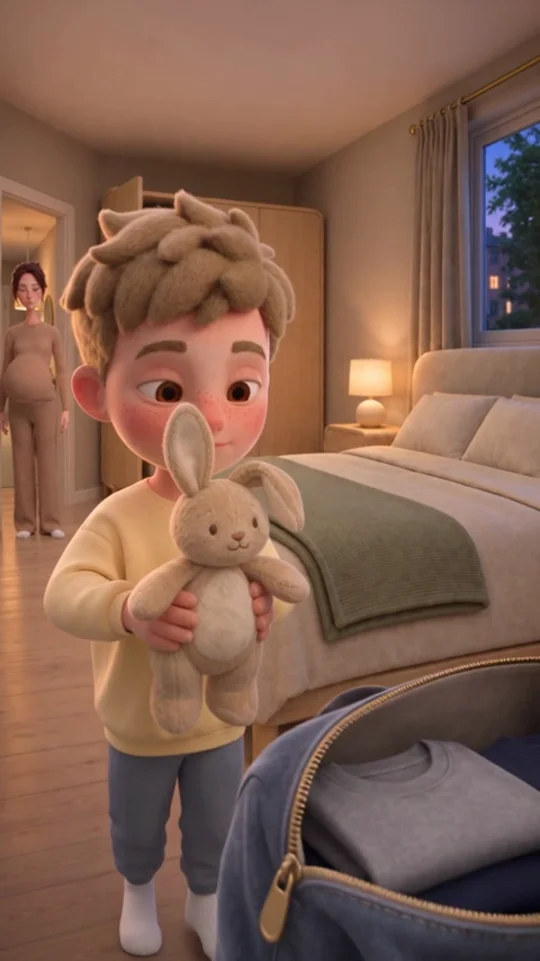
«Пусть с тобой поспит».
Ниже — кадры, референсы и промпты всех сцен.
01 / История прежде генерации
В этой серии всего четыре реплики. Всё остальное рассказывают ключи, дорожная сумка, пустая тарелка и детская игрушка.
«У Вики
девять недель».
«Пусть с тобой
поспит».
«Папа завтра
придёт?»
«Не знаю».
Здесь реальные материалы серии. Начни с готовых референсов, а затем меняй историю и постановку под свою идею.
Полный исходный сценарий ↓Для каждой сцены запиши одно действие, одну перемену и реакцию героя. В этой серии путь простой: разговор → сборы → ожидание Вики → игрушка → прощание → пауза за дверью.
Скачай карты персонажей, помещений и предметов. Новые образы делай на основе старых карт — с тем же лицом, материалами и пропорциями.
Мы использовали Seedance 2.5 через BytePlus: 9:16, 480p, длительность по карточке. Прикрепляй изображения в порядке @image1, @image2… и вставляй полный промпт. В другом интерфейсе обозначения референсов могут отличаться.
Проверь речь, лица, количество предметов и переходы между планами. После этого собери сцены и добавь только нужные перебивки. Финальную паузу оставь целой.
02 / Библиотека серии
Семья, две квартиры и вещи, которые связывают историю. Нажми на изображение, чтобы рассмотреть его, или скачай оригинальный PNG.
Все ассеты + промпты ↓Карта из предыдущих серий. Camel-костюм, беременность 28 недель.
Готовый референс из предыдущих серий. Промпт его создания в этом комплекте не сохранился.
Базовая карта: серый свитер. Для разговора и сборов.
Готовый референс из предыдущих серий. Промпт его создания в этом комплекте не сохранился.
Исходное лицо и пропорции ребёнка.
Готовый референс из предыдущих серий. Промпт его создания в этом комплекте не сохранился.
Лицо и розовый кардиган. В домашней сцене убрать сумку и ремень.
Готовый референс из предыдущих серий. Промпт его создания в этом комплекте не сохранился.
Один и тот же костюм при приходе и уходе.
Загрузите в этом порядке:
EDIT the referenced character sheet. CHANGE ONLY: put the same man in a plain hip-length dark ink-blue matte cotton twill zip jacket, worn OPEN over his existing charcoal-grey fine-knit crew-neck sweater; keep his existing dark-blue jeans, low white sneakers and wedding ring. Neutral relaxed closed-mouth expression in all three views. PRESERVE EXACTLY his sandy light-brown sculpted swept forelock, grey-blue eyes, long nose, freckles, light stubble, facial proportions, height and lean build. No bag or phone in his hands. Three-panel wide 16:9 model sheet on ONE flat mid-grey studio background: full-body front at left, full-body back in the middle at the same scale, large head-and-shoulders three-quarter portrait at right. Entire heads and both feet inside the full-body panels. Same jacket in every view: simple stand collar, one unobtrusive front zip, two plain side pockets, no hood or patches. Premium stylized 3D feature-animation in the SAME tactile world as the references: soft flocked velvet skin over a matte painted-vinyl base with a fine dense peach-fuzz nap, felted plush hair, tactile matte knit and woven fabrics, rounded sculpted forms, pale wood and restrained brass, gentle bloom and fine natural film grain. Materials remain three-dimensional, soft and touchable. No painted-2D treatment, no photoreal skin, no glitter, no glossy plastic. Even neutral soft studio light. Exactly two arms, two legs and ten fingers on each depiction. No borders, text, letters, numbers, labels or logos.Скачать .txt ↓
Жёлто-серая пижама, белые носки. Игрушка — отдельный ассет.
Загрузите в этом порядке:
EDIT the referenced Misha character sheet. CHANGE ONLY clothing and expression: plain soft pale butter-yellow long-sleeved cotton pajama top, matching soft blue-grey pajama trousers without holes, white cotton socks, no shoes. Relaxed neutral closed mouth, ready for bed; preserve his identity and age. PRESERVE EXACTLY the preschool boy's messy sandy-brown thick felted hair locks and forelock, large brown eyes, freckles across the nose, pink nose and cheeks, face proportions, body proportions, and tooth arrangement if any teeth happen to show. Same child, not older or younger. Empty hands: no toy, no bag. Three-panel wide 16:9 model sheet on ONE flat mid-grey studio background: full-body front at left, full-body back in the middle at the same scale, large head-and-shoulders three-quarter portrait at right. Keep complete heads and both socked feet inside the full-body panels. Premium stylized 3D feature-animation in the SAME tactile world as the references: soft flocked velvet skin over a matte painted-vinyl base with a fine dense peach-fuzz nap, felted plush hair, tactile matte knit and woven fabrics, rounded sculpted forms, pale wood and restrained brass, gentle bloom and fine natural film grain. Materials remain three-dimensional, soft and touchable. No painted-2D treatment, no photoreal skin, no glitter, no glossy plastic. Even neutral soft studio light. Exactly two arms, two legs and ten fingers on each depiction. No patterns, printed graphics, borders, text, labels, logos or numbers.Скачать .txt ↓
Локация из предыдущих серий. Изнутри ручка двери слева.
Готовый референс из предыдущих серий. Промпт его создания в этом комплекте не сохранился.
Референс материалов для новой квартиры Вики.
Готовый референс из предыдущих серий. Промпт его создания в этом комплекте не сохранился.
Кровать справа, шкаф и проход слева. Сумку добавляем в сцене.
Загрузите в этом порядке:
Create ONE EMPTY parents' bedroom belonging to the family apartment in reference 1. Reference 1 establishes the existing architecture/material palette, reference 2 the tactile animated-film world only. No people. Vertical 9:16 full-frame location asset at evening, eye-level view from near the foot of a double bed at a gentle three-quarter angle. The bed occupies the RIGHT side, with pale rounded oak frame, cream woven upholstered headboard, neutral ivory linen bedding and a neatly folded muted sage blanket. The near foot-end surface of the bed is clear and reachable for packing a travel bag later. On the LEFT rear wall a pale oak wardrobe with one door ajar, a few grey/navy hanging clothes and shelves; next to it a clear open doorway to the family hall. Leave an unobstructed floor route from that doorway to the near side of the bed for a small child. Warm greige walls and pale oak planks matching the hallway reference, restrained brass fittings, a small cream linen-shade bedside lamp giving a warm 3000K pool, faint cool evening light from a side window. Calm ordinary modest apartment, not luxury. Premium stylized 3D feature-animation in the SAME tactile world as the references: soft flocked velvet skin over a matte painted-vinyl base with a fine dense peach-fuzz nap, felted plush hair, tactile matte knit and woven fabrics, rounded sculpted forms, pale wood and restrained brass, gentle bloom and fine natural film grain. Materials remain three-dimensional, soft and touchable. No painted-2D treatment, no photoreal skin, no glitter, no glossy plastic. All important room geometry readable, moderate depth of field. No travel bag, toys, people, child bed, text, labels, numerals or logos.Скачать .txt ↓
История исправления: готовый PNG уже исправлен. Применяй этот промпт к своему промежуточному результату только при таком же дефекте.
Загрузите в этом порядке:
Edit this exact bedroom image. Output a tall VERTICAL 9:16 image, with height approximately 1.778 times the width. Extend the existing canvas above and below to reach 9:16, preserving the room, furniture, camera angle, light, colours and tactile 3D rendering. Keep the full open doorway on the left, the same wardrobe with one door open, the same bed on the right, the same bedside lamp, window and bedding. Continue ceiling at the top and pale oak floor at the bottom naturally. Do not crop away the doorway or bed, do not add furniture, and do not move any item. No people, travel bags, toys, text or labels. This is a narrow vertical environment reference, not a 3:4 portrait.Скачать .txt ↓
Два места. Вторая тарелка сначала на тумбе, затем на столе.
Загрузите в этом порядке:
Create ONE EMPTY compact dining-kitchen corner of Vika's separate apartment, in the same tactile stylized 3D rendering world as the references. Reference 1 provides material quality only; this must be a recognizably DIFFERENT home. Reference 2 provides the character's world and dusty-rose palette only; no people appear. Vertical 9:16, eye-level gentle oblique view. A small rectangular medium-walnut dining table with rounded corners, exactly TWO dusty-rose upholstered chairs facing each other, a narrow tidy greige kitchenette along the back wall and one low sideboard on screen-right. Muted rose linen placemats, neutral ceramic tableware. Staging for her to SET the second place during the scene: ONE cream dinner plate already on the far place at the table, the opposite placemat empty. ONE matching second plate rests separately on the right sideboard, easy to pick up. Two simple drinking glasses and unbranded cutlery, a plain dark smartphone with its screen off beside the far place. No duplicates or stacks of dishes. A small warm 3000K linen-shaded light makes an intimate pool over the table, cool blue evening through a left window. No children's furniture, drawings or toys. Premium stylized 3D feature-animation in the SAME tactile world as the references: soft flocked velvet skin over a matte painted-vinyl base with a fine dense peach-fuzz nap, felted plush hair, tactile matte knit and woven fabrics, rounded sculpted forms, pale wood and restrained brass, gentle bloom and fine natural film grain. Materials remain three-dimensional, soft and touchable. No painted-2D treatment, no photoreal skin, no glitter, no glossy plastic. Empty home, readable tabletop and approach space for Vika, no romantic candles, flowers, wine, text, signs, labels or numbers.Скачать .txt ↓
История исправления: готовый PNG уже исправлен. Применяй этот промпт к своему промежуточному результату только при таком же дефекте.
Загрузите в этом порядке:
Edit this exact vertical 9:16 Vika kitchen image. Change ONLY the glass count: there are currently three drinking glasses on the dining table. Remove the EXTRA BACK-RIGHT glass, the one nearest the far dinner plate and knife, behind the foreground right glass. Preserve the LEFT glass near the phone and preserve the FOREGROUND-RIGHT glass beside the empty placemat. Final image has exactly TWO drinking glasses, one for each place. Preserve the one dinner plate on the table and the second plate on the right sideboard, the empty foreground placemat, phone, cutlery, two chairs, every cabinet, lighting, colours, textures, composition and camera. No other changes. Keep the exact tall vertical 9:16 framing.Скачать .txt ↓
Вид снаружи: ручка справа, петли слева.
Загрузите в этом порядке:
Create the EXTERIOR LANDING view of the SAME family apartment entrance door shown FROM INSIDE in the reference. Reference is continuity evidence, not the requested camera side. The camera now stands OUTSIDE the apartment facing its CLOSED door. Preserve the light warm-grey matte door leaf, pale simple casing, flat central panel with a narrow rectangular border near the edge and modest restrained brass hardware. Because we are on the opposite side, the brass lever handle and round rosette are on SCREEN-RIGHT, directed inward toward the door centre; hinges are on SCREEN-LEFT. No peephole, apartment number or added locks. The door is slightly left of centre in a vertical 9:16 medium-wide empty frame. Show enough flat landing floor and free space to the right of the door for one standing adult with a travel bag beside his feet. Public landing: quiet warm grey-beige plaster, simple pale skirting, matte muted grey stone-look floor tiles, a broad soft 3800K ceiling light. Subdued and ordinary, not ominous. Same rounded tactile high-end stylized 3D material world as the reference. The apartment's wood floor, hallway rug, console, mirror and hanging coats remain BEHIND the closed door and are not visible here. No other doors, stairs, windows, people, bags, signage, numbers, lettering or logos. Readable door and floor, no heavy depth blur.Скачать .txt ↓
Закрытый и открытый вид одного предмета, а не две сумки.
Загрузите в этом порядке:
Create a standalone prop reference card for ONE recurring overnight travel bag in the stylized 3D world of the supplied references. References establish materials and rendering only; no people or room appear. Portrait 3:4 image on a flat mid-grey studio background. Two vertically stacked views of THE SAME BAG, with space separating them, no labels. TOP: closed three-quarter view. BOTTOM: open three-quarter view slightly from above, main zipper fully open and handles resting to the sides, showing two folded plain grey and navy T-shirts and plenty of empty space for a child's small soft toy. The bag is a medium soft-sided weekender, approximately 50cm wide, 28cm high, 25cm deep; faded dark slate-blue woven canvas, charcoal woven short carrying handles, gently rounded ends, soft folded body, a single long top zipper, one simple flat outer front pocket. No shoulder strap, wheels, telescopic handle or hard shell. Match bag shape, handle attachment positions and zipper in both views. Premium stylized 3D feature-animation in the SAME tactile world as the references: soft flocked velvet skin over a matte painted-vinyl base with a fine dense peach-fuzz nap, felted plush hair, tactile matte knit and woven fabrics, rounded sculpted forms, pale wood and restrained brass, gentle bloom and fine natural film grain. Materials remain three-dimensional, soft and touchable. No painted-2D treatment, no photoreal skin, no glitter, no glossy plastic. Neutral soft studio lighting, all bag edges clearly readable. No toys yet, no extra luggage, no logos, labels, lettering or numbers.Скачать .txt ↓
Одна игрушка. Согнутое ухо и ремонтный шов сохраняем.
Загрузите в этом порядке:
Create Misha's beloved small soft toy as a standalone prop in the SAME tactile stylized 3D world as the supplied boy reference. Do not include the boy or any person. Portrait 3:4 prop portrait on a flat mid-grey studio backdrop. One complete plush rabbit, about 24cm from seat to head and small enough to fit a preschool child's arms or inside a medium travel bag. Warm oatmeal-beige short worn plush, cream oval belly and cream inner ears, two small dark-brown embroidered eyes, tiny stitched brown nose, simple stitched mouth, soft round body, two floppy arms and two soft hind feet. Two long fabric ears: its anatomical LEFT ear bends gently halfway down; the RIGHT ear is softly upright. Slightly flattened loved fur, one subtle repaired seam at a forepaw, clean and well loved. No clothes, scarf, ribbon, buttons, patches, labels or accessories. A simple appealing child's toy with restrained proportions and visible seams; not a living anthropomorphic rabbit. Show it sitting in a clear three-quarter view with the full ears and feet inside the image. Premium stylized 3D feature-animation in the SAME tactile world as the references: soft flocked velvet skin over a matte painted-vinyl base with a fine dense peach-fuzz nap, felted plush hair, tactile matte knit and woven fabrics, rounded sculpted forms, pale wood and restrained brass, gentle bloom and fine natural film grain. Materials remain three-dimensional, soft and touchable. No painted-2D treatment, no photoreal skin, no glitter, no glossy plastic. Soft even neutral light, no room, no text or numbers.Скачать .txt ↓
Стартовый кадр: вторая тарелка ещё в руках Вики.
Загрузите в этом порядке:
Create one vertical 9:16 animation keyframe for SROK in the EXACT tactile stylized 3D world of these references. Image 1 is the existing dining-room design; image 2 is Vika's identity and clothes only. NEW CAMERA: an absolutely true, orthographic-looking 90-degree bird's-eye view STRAIGHT DOWN at the rectangular walnut dining table. The tabletop edges are parallel to the image edges, all plates and glass rims are PERFECT CIRCLES, no tabletop perspective convergence, NO visible vertical side of table, NO table legs, NO walls, NO horizon, NO ceiling lamp in the picture. Camera below the pendant looking straight down. Show the WHOLE tabletop, two dusty-rose placemats at its top and bottom, and narrow margins of floor plus the tops of the two rose chairs, one beyond each short seating end. Table stays from the same room: walnut grain, round corners, dusty rose cloth, cream ceramics. At the UPPER placemat, one cream round plate already lies flat, with one clear water glass on upper-left and simple cutlery. On the LOWER placemat there is NO plate yet: Vika's two hands enter from the RIGHT and hold the SECOND cream plate horizontally only 3cm above the centre of that lower placemat, ready to set it down. This is exactly two plates total, including the one in her hands. A second clear water glass is on the lower-right. Exactly TWO glasses total. One fork and one knife beside each placemat. One dark unlettered smartphone lies face-up LEFT of the UPPER place. Her rose cardigan sleeves, two forearms and the very top of her honey-blonde head may enter from the right; no other body or person. The empty upper chair and lower chair remain in their positions. No third plate on a sideboard, no extra bowls, food, flowers, candles or tableware. Warm evening 3000K pendant illumination with weaker cool window fill, soft contact shadows. PRESERVE references' matte, soft flocked 3D material quality, felted hair, knit, tactile fabric, dimensional sculpted objects, fine subtle grain. Clean animation still, NO text, no labels, no border, no panels, no logos. Critical priority: a REAL 90-degree overhead view with BOTH places simultaneously readable and exactly two physical plates.Скачать .txt ↓
Обе тарелки уже на столе. Ближнее место свободно.
Загрузите в этом порядке:
Create one vertical 9:16 film keyframe in the EXACT tactile stylized 3D world of the provided references. Image 1 is the existing room and its architecture; image 2 is Vika's exact character identity, face proportions and clothes only. SAME room: small walnut rectangular table with rounded corners, TWO rose upholstered chairs opposite each other, greige cabinetry, left window/sink with blue-hour exterior, warm brass/linen lighting. Vika is seated in the FAR chair, behind her own far place setting. She has the same straight honey-blonde hair, pale grey-green eyes, small cheek mole, gold hoops, dusty-rose knitted cardigan over white tee and cream trousers, ordinary slim waist. REMOVE the shoulder bag and all its straps. Her expression is quiet and attentive, expecting a guest, no smile at camera or dramatic sadness. Both hands rest on the table beside her OWN plate. CRITICAL CHANGE FROM ROOM REFERENCE: The NEAR guest place is now also fully set. EXACTLY TWO cream plates are visibly resting on the table, one directly in front of seated Vika, and ONE LARGE, CLEARLY VISIBLE EMPTY PLATE on the NEAR rose placemat in the foreground. The near plate is NOT moved to her place; both exist simultaneously. The NEAR rose chair is empty. Exactly two water glasses, far-left and near-right, one fork and one knife for each place. The right sideboard is BARE: no third plate. One plain dark phone rests left of her far place (to Vika's right). No extra tableware, food, bowls, flower, bottle or candle. CAMERA is close, just above table level from slightly behind the EMPTY NEAR CHAIR, not a wide room photograph. Thin blurred chair-back edge at the very bottom only. Near empty plate fills lower foreground; Vika's face and upper torso are large and readable in upper half, slightly right of centre. Entire head in frame, architecture only as context. Both cream plates and both glasses must remain inside the frame at the same time. Soft warm evening pendant light and weaker cool window fill model her face and objects; foreground contact shadows and subtle depth, no frontal studio light. Preserve the references' matte tactile 3D style, flocked skin, felted hair, knit, sculpted dimensional forms, subtle natural grain. No text, labels, border, panels, logos or phone UI.Скачать .txt ↓
Референс для перебивки: берём кадр уже с двумя тарелками.
Готовый кадр / графика для монтажа. Генерационный промпт не требуется.
PNG с прозрачностью. Плашку добавляем на монтаже.
Готовый кадр / графика для монтажа. Генерационный промпт не требуется.
Старые карты персонажей и помещений включены как готовые референсы. Промпты их первоначального создания в материалах этой серии не сохранились. Для всех новых изображений, двух ключевых кадров и точечных правок промпты доступны в карточках.
03 / Постановка и генерация
Открой сцену: рассмотри кадр, скачай референсы в указанном порядке и скопируй полный промпт. Английский текст описывает постановку; русские реплики сохранены внутри.
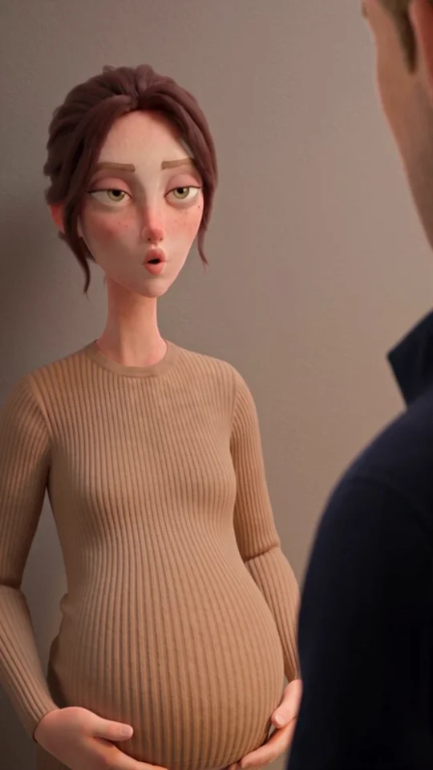
Хук с первой секунды. Одна фраза прерывает обычное действие — муж так и не кладёт ключи.
Референсы — строго в этом порядке
SCENE CONTEXT SROK, episode 4 "Things", opening scene. Start directly on the confrontation, already inside the family entrance hall, with no establishing shot, title or arrival prelude. The visibly heavily pregnant wife tells her husband that his younger lover Vika is nine weeks pregnant. The husband has just come home and is still wearing his open dark-blue jacket. He was about to put his keys into their usual tray. Exactly ONE spoken passage in RUSSIAN, spoken only by the wife: "У Вики девять недель." The husband remains silent. The child and Vika are absent. THE DEVICE — AN INTERRUPTED EVERYDAY ACTION: the wife's matter-of-fact line lands immediately; a cut reveals that the husband has failed to finish putting down his keys; his listening portrait reveals him testing whether any ordinary explanation can still work; the final shared frame holds the distance between them. Four shots joined by exactly THREE HARD CUTS at 2.6, 4.0 and 7.0 seconds. Twelve seconds total. Real time throughout, no slow motion, no speed ramps. ACTING — shared direction: keep this exchange at an ordinary indoor volume, without letting the child in another room hear a confrontation. The event ends when both have to wait in the same silence, unable to resume an ordinary homecoming. WIFE: she wants him to acknowledge the fact without making her interrogate him. Her obstacle is his habit of evading an answer. She delivers one plain factual sentence to him, then gives him the space to answer. Her attention actively tests whether he will meet the fact or try to pass it off; she does not help him with a second question. Physical channel: she stays at the doorway, facing him, hands relaxed beside her belly rather than reaching to greet him. HUSBAND: he wants her to allow the familiar homecoming to continue. Her exact knowledge makes his usual explanation unusable. Through the interrupted key gesture he tries to buy a moment to work out how much she knows. He searches her response for permission to say something ordinary, finds none, and stays with her gaze instead of inventing an answer. His mouth remains closed. Safety: both are mentally engaged with their partner, with natural breathing and natural blinking, never a glassy unfocused stare. Restrained feature-film acting; no tears, yelling, comic shock or theatrical recoil. ACTIVE REFERENCES @image1 — THE WIFE. Preserve her identity and proportions exactly: long narrow oval face, hooded hazel-olive eyes, straight brown brows, freckles and left-cheek beauty mark, brown hair pinned up with a charcoal claw clip and loose temple strands, small gold stud earrings. Preserve her large 28-week pregnancy belly, camel ribbed knit top and matching wide trousers, white socks. Take ONLY her character design and wardrobe from the sheet, never the sheet layout, grey background, expression or studio light. @image2 — THE HUSBAND IN HIS JACKET. Preserve his tall lean proportions, sandy light-brown swept forelock, grey-blue eyes, long nose, freckles and light stubble. Same open dark ink-blue jacket over grey crewneck sweater, dark jeans, white sneakers and wedding ring. Take ONLY his character design and wardrobe, never the sheet layout, grey background or studio light. His expression is driven by listening to his wife, not by the card's smile. @image3 — THE FAMILY ENTRANCE HALL. Preserve its narrow layout: closed greige entrance door at the far end, pale oak flooring and right-side rounded pale-wood console, shallow ceramic key tray on the console, oval brass mirror on the right wall, warm linen pendant, left-side doorway, sage runner, coat and mustard child's jacket on the right hooks. The wife stands by the existing LEFT doorway; the husband stands beside the existing RIGHT console. This is one room throughout. Reset only the small keys in the reference: the tray is initially empty and the husband holds one keyring with two plain metal keys. Remove loose duplicate keys from the console. Keep the original tactile stylized 3D art-toy world: matte flocked skin, soft felted hair, ribbed knit and woven cloth, rounded sculpted forms, pale wood and restrained brass. The same materials receive the location's light and cast contact shadows. Dimensional 3D forms, no flat paper-painting treatment, no glitter, no photoreal skin, no glossy plastic. LOCATION MAP View from the inner end of the hall toward the closed entrance door. Wife occupies the LEFT side beside the existing doorway, turned three-quarter toward her husband at screen-right. Husband occupies the RIGHT side beside the console, facing her across approximately 1.2 metres of clear hall. His RIGHT hand holds the keys just above the tray; his LEFT arm rests at his side. Maintain this screen direction in every shot; stay on the same side of their axis. The closed entrance door stays in the depth behind him. Frame the mirror outside the portraits; any visible mirror sliver reflects only the wall or ceiling, never an additional person. Nobody walks through the scene. FIRST FRAME A close medium view of the wife from head to below her pregnant belly, at the left third, with her husband's soft dark-blue shoulder forming a narrow foreground edge at far right. Her face and mouth are unobstructed and her pregnancy is unmistakable. She is already looking at him. The line starts within the first 0.2 seconds. FORMAT MODE Native vertical 9:16. One image fills the frame in every shot. No split screen or reference-sheet layout. OPTICS Shot 1: FOV 47 degrees, f/4, wife and belly clearly readable, husband's near shoulder soft. Shot 2: FOV 29 degrees, f/5.6, tight insert of the husband's right hand, keys and tray, all in focus. Shot 3: FOV 29 degrees, f/4, husband's listening face sharp, a narrow soft edge of the wife's shoulder at far left. Shot 4: FOV 63 degrees, f/5.6, a medium-wide shared frame with both characters readable and space between them. Camera position remains on the same side of the axis. CAMERA 0.0–2.6: locked close medium of wife, already framed for the line. 2.6–4.0: HARD CUT to the keys insert at console height. 4.0–7.0: HARD CUT to the husband's close-up. 7.0–12.0: HARD CUT to the shared frame, wife left and husband right. Hold without travelling, zooming or reframing. Only imperceptible operator weight. All transitions are instantaneous hard cuts; no dissolve or morph. ACTION SEQUENCE 0.0–2.6 — SHOT 1. At 0.15 the wife says quietly and evenly in Russian: "У Вики девять недель." Natural adult female voice, clear ordinary conversational diction, no theatrical accent or sarcasm. Complete the line by about 2.2. Her mouth is visible and accurately synchronized for the whole line. Her hands remain low; she does not stroke or point at her belly. She stays looking at the husband, leaving the next turn to him. HARD CUT at 2.6. 2.6–4.0 — SHOT 2. His right thumb and forefinger still grip the keyring. The two attached keys hang only 3–5 centimetres above the ceramic tray. His attempt to lower them has stopped. A tiny remaining swing settles under gravity with one very light metallic tick between the two keys. He neither releases nor drops them. No other action. HARD CUT at 4.0. 4.0–7.0 — SHOT 3. The husband looks toward his wife at screen-left, actively checking whether she is waiting for an explanation or already knows it. He finds no way to begin. His mouth stays closed and he does not nod, shrug or smile. The key-holding hand remains below the frame in the same position. HARD CUT at 7.0. 7.0–12.0 — SHOT 4. Both remain where they were. She waits for him to answer. He waits for her to say what else she knows. At 9.0–10.0 he finishes the small interrupted action: lowers the same keys fully into the tray and releases the ring only after the keys touch it. One quiet ceramic-and-metal contact. His hand withdraws a few centimetres and rests beside the tray. The wife does not rescue the silence. Hold their unanswered exchange until the cut at the end. Nobody leaves or removes clothing yet. ANIMATION STYLE Tactile stylized 3D feature animation, restrained poses animated on twos within a 24 fps output. Smooth stable camera. Small natural breathing, weight in planted feet, slight cloth and loose-hair secondary motion. Character volume and dimensional light stay stable. The keys are the only emphatic physical action; eye-work belongs to listening and testing the partner's response. PHYSICS Each adult has exactly two arms, two hands and ten fingers. One keyring with exactly two keys belongs to the husband's RIGHT hand throughout, then rests in the single tray. Keys stay attached to the ring; they swing and settle with gravity. The hand never changes sides and objects never multiply, float or pass through the tray. The wife keeps her full pregnancy volume. Clothing, walls, console and all contact shadows retain their shape across cuts. LIGHTING Evening. Use the established warm linen pendant as the motivated 3000K key from upper camera-right, shaping the faces and casting soft shadows on their far sides. A much weaker neutral-cool 5000K ambient bounce comes from the inner apartment at camera-left. Preserve cream and camel skin/cloth colours; dark ink-blue jacket supplies the contrast. Keep background exposure about half a stop below the faces and contact shadows readable, with soft falloff into the far hall. No flat frontal studio lighting, theatrical coloured spotlights or change of time of day. All four shots share the same lighting direction. AUDIO NO BACKGROUND MUSIC, NO SCORE, NO MUSICAL STING. Exactly ONE spoken passage, entirely in Russian, spoken by the wife during shot 1: "У Вики девять недель." No voice-over, added words, male reply, sigh, gasp, child's voice or second repetition. The rest is very quiet domestic room tone, a distant refrigerator hum, the small key-against-key tick in shot 2 and one quiet key-tray contact in shot 4. Her line is close and intelligible above the room tone. No artificial impact sound or dramatic whoosh. QUALITY Stable original identities, delicate tactile microtexture, sculpted three-dimensional faces, clear Russian lip-sync, natural restrained film grain and gentle bloom only at the lamp. Clean silhouette separation without a glowing outline. No text, letters, numbers, symbols, captions, logos or UI anywhere. Preserve the same hall across every shot. TECHNICAL PARAMETERS Seedance 2.5 via direct BytePlus/ByteDance. 480p, vertical 9:16, 24 fps output. Exactly 12 seconds, four shots, three hard cuts. Real time throughout, no slow motion, no speed ramps. Generate synchronized scene audio. POSITIVE LOCKS Exactly two adults share the same entrance hall: wife left, husband right. The wife's established identity, camel outfit and 28-week pregnancy match @image1. The husband's established identity and open dark-blue jacket outfit match @image2. The architecture and materials match @image3. Each adult has exactly two arms, two hands and ten fingers. One right hand holds one ring with two keys until they are placed into one tray in shot 4. Four shots are joined by exactly three hard cuts at 2.6, 4.0 and 7.0 seconds. The wife's mouth is visible for the single exact Russian line in shot 1; the husband listens with his mouth closed. The soundtrack contains only her one line and restrained domestic sounds. Every visible surface and object is unlettered and unbranded. NO BACKGROUND MUSIC, NO SCORE, NO MUSICAL STING. No music of any kind.Скачать .txt ↓
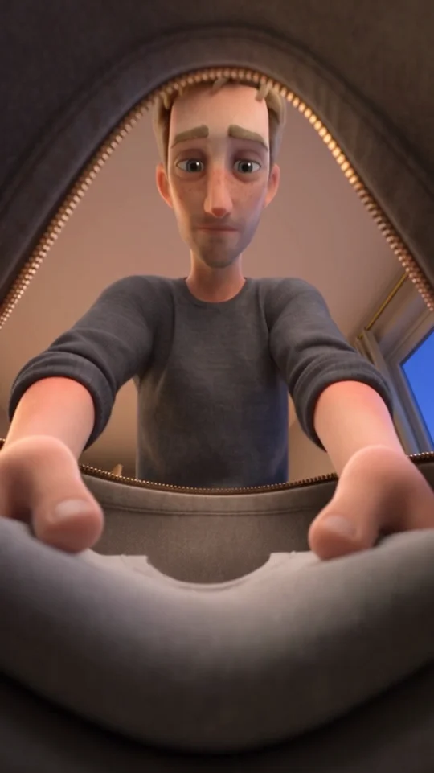
Уход становится действием. Жена появляется в дверях, муж замирает — и возвращается к сборам.
Референсы — строго в этом порядке
SCENE CONTEXT SROK episode 4, scene 2. Immediately after his pregnant wife said that Vika is nine weeks pregnant, the husband quietly packs a travel bag in their bedroom. His jacket has been removed between scenes; here he wears his established grey sweater. The wife arrives at the bedroom threshold. He interrupts his packing to see whether she will ask him to stay. She stays in the doorway without offering that invitation. He resumes packing. No spoken words, no captions, no music. The child and Vika are absent. THE DEVICE — A VIEW FROM INSIDE THE BAG, FOLLOWED BY A LATERAL DOORWAY REVEAL. Three shots, exactly TWO hard cuts at 3.0 and 8.0 seconds, 12 seconds total. This scene starts from a low object viewpoint, then uses one short physical sideways camera move. It is not another succession of static face portraits. Real time throughout, no slow motion or speed ramps. ACTING TASK, shared direction: complete the practical task quietly enough to keep the child outside this confrontation. Husband's motive is to make leaving possible without asking his wife for permission; his goal is to get the bag packed. Her presence forces him to check whether she will stop him. His hands suspend their work while his attention searches her for an invitation to stay; when none comes, he returns to the shirt. Wife's motive is to stop carrying his decisions for him; her goal is to make him face the fact that she is watching him choose. Her tactic is to remain at the threshold and give him no instruction, while actively registering whether he will put the shirt down or pack it. Physical channels: his interrupted packing, her one step to the threshold followed by staying there. End event: both see that he has resumed the packing himself. Safety: engaged attention on each other and the task, natural blinking and breathing, never frozen glassy eyes. Quiet restrained acting; no tears, big sighs, accusation gestures, comic shock or pantomime. ACTIVE REFERENCES @image1 — THE HUSBAND. Match his established tall lean body, sandy light-brown swept hair, grey-blue eyes, long nose, freckles and light stubble. Exactly the reference's grey crewneck knit sweater with sleeves pushed to the forearms, dark jeans, white sneakers and wedding ring. Take ONLY identity, design and clothing from the character sheet, never its background, panel layout, smile or studio lighting. He is without the blue jacket for the whole scene. @image2 — THE WIFE. Match her long narrow oval face, hooded hazel-olive eyes, freckles and left-cheek beauty mark, mid-brown hair pinned with a dark claw clip and loose temple strands, small gold studs. Same camel ribbed knit top and wide trousers, white socks, full 28-week pregnancy belly. Take ONLY her design and wardrobe, never the reference's background, panel layout or lighting. She watches her husband, not the camera. @image3 — THE BEDROOM. Keep the pale oak wardrobe in the rear with its left compartment already open, the open doorway on the LEFT leading to the family hall, the cream upholstered bed with sage blanket on the RIGHT, the right-side window and warm bedside lamp. The bed, wardrobe and doorway remain in the same places across cuts. Use this as a location reference, not as a mandatory distant framing: compose close enough to read hands, face and the doorway. @image4 — ONE TRAVEL BAG SHOWN TWICE FOR REFERENCE. Use the open lower view for shape: medium slate-blue canvas weekender, charcoal short handles, brass zipper, flat front pocket, grey lining. The top and bottom views depict ONE prop, never two bags. Deliberate initial-state change: the bag is EMPTY at the start; the folded shirts from the card will be placed in it during this scene. The bag remains fully unzipped throughout. Handles lie outside the opening against the bag sides. Render all references in the same tactile stylized 3D art-toy world: matte softly flocked skin, felted hair, soft knit and woven fabric, rounded sculpted forms, pale wood and restrained brass. Dimensional shapes lit by this room, with contact shadows and soft light falloff. No flat painted-paper treatment, glitter, glossy plastic or photoreal skin. LOCATION MAP The bag rests on the sage blanket near the foot of the bed, stable and fully open. Its long axis lies across the bed. The husband stands beside the accessible left side of the bed, beyond the bag from the initial camera viewpoint; his torso reads near centre-right. The doorway is visible in the rear-left behind and to the left of him. A folded navy T-shirt lies on the blanket immediately beside the bag within easy reach. He initially holds one folded light-grey T-shirt in both hands. These are the only two shirts being handled. The wife begins just outside the bedroom, arriving at its LEFT threshold in shot 2. Her pregnancy silhouette stays clear of the door frame. She stays at that threshold through shot 3. FIRST FRAME The camera is physically just INSIDE the open bag against its near inner wall, looking upward over its low far rim at the husband's face and the light-grey folded T-shirt in his hands. A soft narrow arc of grey lining and brass zipper frames the bottom and corners, not most of the picture. His face is readable above the opening. It is a camera viewpoint from a bag, not a miniature man inside a giant bag. FORMAT MODE Native vertical 9:16, one full-frame view per shot. No split screen, panels or reference-sheet layouts. OPTICS Shot 1: FOV 63 degrees, f/5.6, mild upward angle from the bag interior; his hands, shirt and face are readable, near lining softly blurred. Natural proportions, no fisheye. Shot 2: FOV 47 degrees, f/5.6, waist-height three-quarter medium from beside the foot of the bed. Husband, bag and rear-left doorway readable together. No focus rack. Shot 3: FOV 47 degrees, f/5.6, low exterior view just above mattress height beside the bag. Hands and bag dominate the foreground, with the wife readable in the LEFT doorway behind. Keep enough depth of field to preserve her silhouette and presence. CAMERA 0.0–3.0: stationary camera inside the near edge of the open bag. The bag itself is stationary. No travelling through cloth or zipper. HARD CUT at 3.0 to an EXTERIOR viewpoint beside the foot of the bed. 3.0–4.5: physically slide the camera 25 centimetres to camera-right at constant waist height, producing parallax past the near bed edge and opening a clearer view of the LEFT doorway. Keep the husband near frame-right. This is a lateral move, not a zoom, push-in or orbit. 4.5–8.0: stop and hold the resulting medium composition, the two characters separated in depth. HARD CUT at 8.0 to the low exterior hands-and-bag composition. 8.0–12.0: hold that composition. Stay on one side of the action axis throughout; the doorway always reads screen-left. Exactly three shots and two hard cuts. ACTION SEQUENCE 0.0–3.0 — SHOT 1. The husband lowers the one folded light-grey T-shirt with both hands through the open mouth and places it flat in the FAR HALF of the bag, away from the near-wall camera. He releases it only after contact with the lining. Both hands withdraw through the same opening. The cloth and his arms never cover the whole lens or pass through the camera. The near half remains empty. HARD CUT at 3.0. 3.0–4.5 — SHOT 2. During the short lateral camera move, he picks up the folded NAVY T-shirt from the blanket beside the bag with both hands. At the same time the wife takes one quiet step to the LEFT bedroom threshold and stops there, looking at him. She carries nothing. This movement gives him a reason to notice her. 4.5–8.0. He interrupts packing with the navy shirt supported in both hands just above the bag. He turns his attention to her to find out whether she will stop him. She remains at the threshold, watching what he chooses to do. No nod, beckoning hand, reply, hug or movement toward him. Neither performs sadness; they attend to each other. The grey shirt remains inside the bag and the navy shirt remains in his hands. HARD CUT at 8.0. 8.0–10.5 — SHOT 3. With his wife still visible in the rear-left doorway, he returns to the bag and lowers the SAME navy shirt flat ON TOP OF the grey shirt in the far half. His hands release the cloth after contact, then withdraw. Two folded shirts are now inside; the near half remains empty for a later scene. 10.5–12.0. His hands rest at the open rim. He leaves the bag exactly where it is and fully open. She stays in the doorway. Hold the result without a new task. No zipping, lifting the bag, putting on a jacket or leaving the room. ANIMATION STYLE Tactile stylized 3D feature animation, restrained poses on twos within a 24 fps output, smooth camera motion. Natural body weight, tiny cloth settling after each placement, loose hair and sleeves with restrained secondary motion. A purposeful pause in the husband's task creates the beat; it is not a frozen video frame. The wife keeps natural breathing and active attention. PHYSICS Exactly two adults, each with two arms, two hands and ten fingers. The husband uses both of his own hands for each shirt. Exactly one bag on the bed, one grey shirt and one navy shirt. The empty bag gains the grey shirt first, then the navy shirt on top; neither shirt disappears or changes colour. Hands and cloth pass through the open mouth, never through the bag walls. Canvas yields slightly under contact while the bag stays in place; the mattress and blanket support its weight. The bag opening stays broad, unzipped and uncovered; the near half remains unfilled. The wife stays on the floor at the doorway with her full pregnancy volume. LIGHTING Established evening bedroom lighting: soft 3000K bedside lamp from the right and warm hall light behind the doorway, balanced by weaker blue-hour window fill around 6500K from the right-rear. Warm cloth highlights, cooler quiet shadows, clear contact shadows in the bag and under the arms. Keep faces readable inside the bag viewpoint; the bag rim provides a dark foreground framing layer, not a black tunnel. Preserve depth with foreground rim, working man and distant doorway. No frontal studio light or lighting changes across cuts. AUDIO NO BACKGROUND MUSIC, NO SCORE, NO MUSICAL STING. No speech in any language, narration, sighs, gasps, humming or child's voice. Diegetic sound only: two soft cloth placements, subtle knit and canvas rustle, one quiet socked step at the threshold, low domestic room tone and distant refrigerator hum. No zipper sound because the bag stays open. No cut whoosh or dramatic impact. QUALITY Stable original identities and room geometry; clear fingertips and cloth contacts; tactile matte microtexture; gentle natural film grain. No crawling texture or object duplication. No text, letters, numbers, symbols, captions, logos or UI anywhere. The camera viewpoint is close and cinematic, never the wide empty location-card composition. TECHNICAL PARAMETERS Seedance 2.5, direct BytePlus/ByteDance, 480p, vertical 9:16, 24 fps output, exactly 12 seconds. Three shots, two hard cuts at 3.0 and 8.0. Real time throughout, no slow motion or speed ramps. Generate only synchronized diegetic audio. POSITIVE LOCKS Exactly one husband and one visibly pregnant wife, each with exactly two arms, two hands and ten fingers. The husband wears the grey sweater and dark jeans from @image1 throughout. The wife wears the same camel outfit and keeps the pregnancy volume from @image2 throughout. The room layout matches @image3, with the doorway always screen-left. One open canvas bag matches @image4; the two reference views depict that one prop. The first grey shirt enters the empty bag, then the navy shirt rests on top of it; the near half stays empty. The bag remains on the bed, fully unzipped and open at the end. The wife arrives at the threshold in shot 2 and stays there through shot 3. The camera starts inside the bag, cuts to a short lateral exterior slide, then cuts to a low exterior packing view. All sounds are physical room, cloth and footstep sounds; all characters stay silent. All visible surfaces remain plain and unlettered. NO BACKGROUND MUSIC, NO SCORE, NO MUSICAL STING. No music of any kind.Скачать .txt ↓
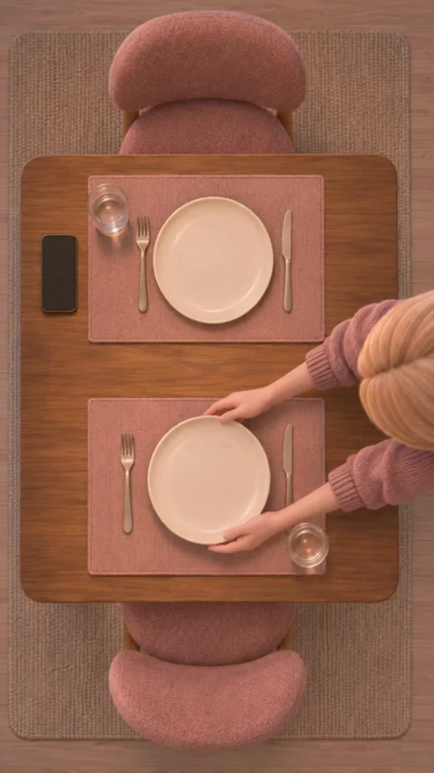
В другой квартире человека ждут. Вторая тарелка на столе связывает действие с пустым местом.
Референсы — строго в этом порядке
SCENE CONTEXT An eight-second scene from SROK, a tactile stylized 3D domestic animated film. Animate the TWO supplied shot-composition references in the given order, joined by ONE hard cut at 3.5 seconds. A woman prepares a second place for an absent guest, then sits opposite that empty place and waits. She is Vika, not the other pregnant woman. No spoken words. Real-time movement within each shot, no slow motion or speed ramp. The cut omits the short walk and sitting; never morph one viewpoint into the other. THE DEVICE — OVERHEAD PLATE PLACEMENT, THEN WAITING ACROSS AN EMPTY PLACE. Shot 1 matches the exact straight-down camera in @image1. Shot 2 matches the close table-level camera in @image2. Both are still. The foreground plate is the same physical plate placed in shot 1. It must stay visibly on the near placemat for EVERY FRAME of shot 2. Both plates must remain visible in both shots. ACTING TASK — VIKA: make the promised visit feel like an ordinary welcoming evening. She finishes his place, then checks whether the silent phone has brought news of him. Finding none, she keeps the place ready and waits for him. Her goal is to welcome him, her obstacle is no confirmation of arrival, her tactic is to let the completed table stand as an invitation. Purposeful attention to the plate, phone and unoccupied chair; natural breathing and blinking. No vacant stare, villainous smile, crying or exaggerated anxious gestures. Her mouth remains closed throughout. ACTIVE REFERENCES @image1 — EXACT COMPOSITION AND INITIAL STATE FOR SHOT 1. Copy this overhead camera, framing, table orientation, lighting, two chairs, two rose placemats, two water glasses, smartphone position and Vika's two hands holding the lower plate. The upper plate is already on the table. Animate only the held lower plate being set down and her hands withdrawing. The tabletop stays a true rectangle seen straight down. Do not substitute an oblique view or crop to just one place. @image2 — EXACT COMPOSITION AND STATE FOR SHOT 2. Copy this camera and close framing, Vika seated at the far place, her established face and clothes, both visible plates, both glasses, the dark phone and the room. The large plate in the LOWER FOREGROUND belongs to the EMPTY guest chair. Keep that foreground plate on its placemat for the whole shot. Vika's own plate stays in front of her. Do not simplify to a one-plate table or a distant whole-room view. @image3 — VIKA IDENTITY CHECK ONLY. Same honey-blonde straight hair, pale sage-grey eyes, small left cheek mole, small gold hoops, dusty-rose cardigan, white tee and cream trousers. Use her face and outfit only. At home she has NO shoulder bag or strap. Keep her ordinary slim waist, no large pregnancy belly. Do not copy the reference sheet layout, grey background, pose or studio light. Both scene reference images show ONE consistent apartment and ONE woman. Render in their same dimensional matte tactile 3D style: softly flocked skin, felted hair, knit, warm wood, soft shadows and restrained brass. Preserve the reference images instead of reinventing their layouts. LOCATION MAP In both shots, the FAR/UPPER place is Vika's; the NEAR/LOWER place is for the absent guest. The phone is LEFT of the far/upper place in both images. In shot 1 Vika stands at the right side of the table and only her hands, sleeves and top of her hair enter from the right. After the hard cut she is seated in the FAR chair as in @image2. The NEAR chair stays empty. Nothing on the table changes position across the cut. Exactly two cream plates, two water glasses and one dark phone. FIRST FRAME Reproduce @image1 as closely as possible, including its complete table view, perpendicular 90-degree downward angle and two place settings. Her two hands hold the near plate a few centimetres above its rose placemat. The far plate already lies flat. Both plate circles are visible. No lamp or wall enters this overhead composition. FORMAT MODE Vertical 9:16. One full-frame image per shot. No split screen or panels. OPTICS Shot 1 uses the same straight-down 90-degree optical axis and full-table framing as @image1, FOV 63 degrees, f/8. Keep the table rectangle and plate circles undistorted. Shot 2 uses the same near-chair table-level composition as @image2, FOV 47 degrees, f/5.6, with Vika's face and BOTH plates readable. Keep her face large in the upper half and the unused plate prominent in the lower foreground. CAMERA 0.0–3.5: stationary exact overhead view from @image1. No tilt or pan. At 3.5: ONE instantaneous HARD CUT directly to @image2's viewpoint with Vika already seated. No dissolve, morph or animated camera flight. This edit skips her moving to the chair. 3.5–8.0: stationary exact close table-level composition from @image2. No camera travel, zoom, pullback or extra cut. ACTION SEQUENCE 0.0–1.5: starting from @image1, Vika lowers the near plate by a few centimetres until it rests flat on the near rose placemat. Both hands release its rim only after contact. 1.5–2.5: her two hands withdraw to the right and leave the frame. The newly placed plate stays on the NEAR placemat. The original plate stays on the FAR placemat. Both glasses and phone stay still. 2.5–3.5: hold the complete overhead table for two, including BOTH plates and the two empty chairs. HARD CUT at 3.5. 3.5–5.5: match @image2 exactly, with Vika seated at her far place and both hands resting beside her own plate. She glances toward the dark phone at screen-left, to her right, checking whether he has sent any sign of arrival. The phone stays flat and dark; she never picks it up or touches it. 5.5–8.0: she returns attention to the unoccupied place opposite and waits. Keep both hands beside her own far plate. The big near guest plate remains clearly visible and untouched throughout. Nobody arrives. End on unresolved waiting. ANIMATION STYLE Restrained stylized 3D feature animation on twos within 24 fps output. Subtle breathing, small natural attention shifts, cardigan and hair settling. Only hands and held plate move in shot 1; only Vika's attention and natural breathing move in shot 2. The room and tableware remain stable. PHYSICS Exactly one woman with two arms, two hands and ten fingers. Both hands support one held plate, lower it onto cloth and release after contact. Exactly TWO plates remain on their own placemats after placement and across the cut. Exactly TWO glasses and ONE phone remain unchanged. No extra objects and no disappearing foreground plate. No hand/object intersection, floating or contact with the camera. LIGHTING Keep both keyframe references' warm 3000K pendant lighting and gentle cooler window fill. Preserve tactile surface texture, contact shadows under the plates and face modelling. No lighting change, flat frontal studio light, glitter or glossy skin. AUDIO NO BACKGROUND MUSIC, NO SCORE, NO MUSICAL STING. No speech, narration, singing, humming, sigh, gasp, phone sound or additional voice. Quiet diegetic apartment room tone and ONE soft plate-on-placemat contact, with a little sleeve rustle. The phone stays silent. No dramatic impact or transition whoosh. QUALITY Maintain shot-reference fidelity: exact two-plate continuity, same Vika identity, same room, clean restrained movement. No text, letters, numbers, labels, subtitles, logos or interface anywhere. The phone remains dark. Fine natural film grain and dimensional tactile materials, matching the keyframes. TECHNICAL PARAMETERS Seedance 2.5, direct BytePlus/ByteDance. 480p, vertical 9:16, 24 fps output, 8 seconds total. Two stationary shots, ONE hard cut at 3.5. Real-time movement within each shot. Diegetic audio only. POSITIVE LOCKS Shot 1 matches @image1's strict overhead view and two-place layout. Shot 2 matches @image2's close waiting view, with BOTH plates visible for the entire shot. The plate placed at the near setting in shot 1 remains the prominent untouched foreground plate in shot 2. Vika is the only person and matches the references, with two arms, two hands and ten fingers, rose cardigan and no shoulder bag. Exactly two plates, two glasses, two placemats, two chairs and one dark phone remain consistent. The near chair stays empty and Vika sits in the far chair after the cut. All characters stay silent with mouths closed. NO BACKGROUND MUSIC, NO SCORE, NO MUSICAL STING. No music of any kind.Скачать .txt ↓
SCENE CONTEXT SROK episode 4, scene 3. A parallel scene in Vika's separate apartment on the same evening. While the married man packs at his family home, Vika prepares a second place at her small dining table and waits for him. She is nine weeks pregnant with her usual slim waist, without a visible late-pregnancy belly. Exactly one person, Vika, is present. No dialogue or narration. Two shots, exactly ONE hard cut at 3.5 seconds, 8 seconds total. Real time within each shot; a brief natural editorial ellipsis across the cut lets her move to her own chair and sit. Never show teleportation within a shot. No slow motion, speed ramp or dissolve. THE DEVICE — EXACTLY VERTICAL TABLETOP VIEW, THEN THE ABSENT GUEST'S PLACE. Shot 1 is a perfect bird's-eye view at exactly 90 degrees straight down. The rectangular tabletop reads as a true rectangle and the plates and glasses as circles, with parallel table edges; only the tops of hands and perhaps the top of her hair appear at the side. No walls or horizon. Shot 2 observes Vika from just behind the empty guest chair, with the newly set place in the foreground. Both cameras are still. No inside-object viewpoint, sideways travel, face close-up sequence or repeated camera device from the preceding scene. ACTING TASK — VIKA. Shared scene direction: prepare an ordinary welcoming evening for two. Motive: she wants his promised visit to feel like the beginning of a shared home. Goal: have his place ready so there is nothing awkward when he arrives. Obstacle: she has no new confirmation that he is on his way. Tactic: make the waiting into an ordinary practical task, then check whether the phone has brought him any closer. The absent man's place is her partner in the task: she makes room for him, measures the silence against the readiness of that place, and keeps the invitation open. Physical channel: gently setting down his plate, then leaving the opposite chair empty while she sits at her own place. After checking the phone, she returns attention to the place she has prepared, as if keeping it ready can help him arrive. Do not play a villain, celebrate the affair, cry or enact exaggerated anxiety. Safety: naturally engaged attention, breathing and blinking, never a vacant frozen stare. ACTIVE REFERENCES @image1 — VIKA. Exact established design: young adult woman with long straight honey-blonde hair, pale sage-grey eyes, softly curved brows, small beauty mark low on her left cheek near the mouth, small gold hoop earrings. Same dusty-rose open knit cardigan, white T-shirt, cream trousers and white sneakers. ONE deliberate wardrobe difference for this home scene: the tan shoulder bag AND its strap are absent. Preserve her ordinary slim waist and natural body proportions; no enlarged pregnancy belly. Take ONLY identity, design and clothing from the sheet, never the sheet layout, pose, grey background or studio lighting. @image2 — VIKA'S EVENING DINING AREA. Preserve the small rectangular walnut table with rounded corners, exactly two dusty-rose upholstered chairs facing one another, exactly two rose placemats, greige kitchen cabinets with brass handles, left window and sink, right sideboard, warm linen pendant and evening colour palette. Use the reference as architecture and material guidance, not as a fixed shot size. Initial prop state: the FAR place already has one cream plate and its cutlery. One clear glass is beside that far plate at screen-left. The NEAR placemat has no plate yet; its one glass stands on screen-right. Vika is already holding the second cream plate above the near placemat. The right sideboard is now bare where that plate was: do not leave a duplicate there. One plain dark phone lies face-up on the table at the LEFT of Vika's FAR place. Exactly two plates total, two glasses total, one phone and two chairs. Add one plain fork and knife beside the near placemat before the first frame so both places are laid; she does not need to handle cutlery in this brief scene. No food, candles, flowers, bottles, pregnancy test or extra tableware. Render in the SAME tactile stylized 3D art-toy world as the references and previous SROK scenes: matte softly flocked skin, felted hair, tactile knit and woven cloth, rounded sculpted forms, pale warm wood and restrained brass. Dimensional forms with contact shadows and soft light falloff. No flat painted-paper style, glitter, glossy plastic or photoreal skin. LOCATION MAP Maintain the reference's orientation: window at room-left, sideboard at room-right, kitchen behind the FAR chair. Vika's own chair and already-laid place are FAR from the reference camera; the guest's empty chair and rose placemat are NEAR. Shot 1 views the same table directly downward with far place toward the top and near place toward the bottom. Vika stands beside the RIGHT table edge, near the guest's place, so her hands reach it naturally without leaning across the whole table. Shot 2 is from just behind the NEAR empty chair toward Vika now seated in the FAR chair. The phone remains to HER RIGHT, which is screen-left from this camera, beside her far place. The near guest chair remains empty throughout. FIRST FRAME Perfect 90-degree overhead view of the rectangular tabletop, both rose placemats and exactly two glasses. One cream plate is on the far placemat; Vika's two hands enter from the right holding the other cream plate horizontally 5 centimetres above the empty near placemat. The ceiling pendant is outside and above the camera; it does not obstruct the table. No face, walls, horizon or tilted perspective. FORMAT MODE Native vertical 9:16; one full-frame view per shot, no panels or reference-sheet layout. OPTICS Shot 1: FOV 63 degrees, f/8, optical axis exactly perpendicular to the tabletop, deep focus across the two places. Plates and glass rims read as circles. No oblique angle, fisheye or cinematic tilt. Shot 2: FOV 47 degrees, f/5.6, camera just above tabletop height behind and slightly to the left of the empty near chair, aimed toward Vika. Her face and the near empty place both remain readable, with only a narrow edge of the chair softly blurred at the very bottom. Vika sits slightly right of centre; the empty plate occupies the lower foreground. Her face is large enough to read, not a distant full-room view. CAMERA 0.0–3.5: completely fixed overhead camera at exactly 90 degrees down. No rotation, descent or travel. HARD CUT at 3.5 to the guest-chair viewpoint. The cut omits her short walk to the far chair and sitting down. 3.5–8.0: fixed view across the unused guest setting toward seated Vika. No camera slide, zoom, push-in, orbit, focus pull or additional cut. ACTION SEQUENCE 0.0–1.8 — SHOT 1. Using both hands, Vika lowers the second cream plate onto the centre of the near rose placemat. The plate stays horizontal, touches the fabric and rests. She releases its rim after contact. 1.8–3.5. She withdraws both hands to the right and out of view. Hold on the now-complete table for two: exactly two cream plates, two glasses, two places, two empty chairs. Nothing else is placed or removed. The phone stays by the far place, dark and silent. HARD CUT at 3.5. 3.5–5.5 — SHOT 2. Vika is now seated at her own far place, her hands resting beside her plate on the table. She checks the phone lying to her right by looking toward it. She does not lift it, tap it, type, call or speak; it stays dark and silent, without visible messages or interface. Her attention is checking for a sign that he is on his way. 5.5–8.0. Finding no new indication, she returns attention to the empty place opposite and remains ready to receive him. The unused guest plate and near chair stay in the foreground. Let the waiting remain unresolved. Her hands stay on the table beside her own plate; no belly touch, smile for the camera, tears or new action. End while she is still waiting, without anyone arriving. ANIMATION STYLE Tactile stylized 3D feature animation, restrained poses animated on twos within 24 fps output. Precise small hand contacts, soft cardigan settling and natural breathing. An ordinary careful plate placement, followed by active waiting. Stable character volume and kitchen geometry. No exaggerated mime, mechanical freeze or floating hands. PHYSICS Exactly one woman, two arms, two hands and ten fingers. Her hands support opposite sides of one plate and release only after it is supported by the placemat. One cream plate was already at the far place; the single new plate settles at the near place. The sideboard stays without a third plate. Exactly two glasses remain in their original positions. Table, chairs and phone are stationary. Hair and cardigan move only with small natural secondary motion. The phone lies flat on the table throughout. LIGHTING Same evening as the family scenes. Soft warm 3000K linen-pendant light over the table and quiet under-cabinet lighting, balanced by weaker blue-hour window fill around 6500K from frame-left. Preserve dusty-rose fabric, warm walnut, neutral cream plates and natural skin colour. Clear plate-on-mat contact shadow, gentle modelling of her face, background slightly dimmer than Vika. The overhead camera sits below the pendant, which stays outside the framing. Keep source direction consistent after the cut. No flat frontal studio light, dramatic coloured spotlight or sudden lighting change. AUDIO NO BACKGROUND MUSIC, NO SCORE, NO MUSICAL STING. No speech, narration, humming, sigh, gasp or voice from another room. Quiet diegetic sounds only: a soft ceramic contact on the fabric placemat, subtle cardigan rustle and low apartment room tone. No phone ring, vibration, notification, keypad or screen sound. No cut whoosh or dramatic impact. QUALITY Stable Vika identity, matte tactile microtexture, gentle natural film grain. Clean two-hand contact and object permanence across the cut. Top-down geometry must be visibly exact, not a high diagonal angle. No text, letters, numbers, symbols, subtitles, logos or UI anywhere, including phone and appliance panels. Unlettered plain dishes and surfaces. TECHNICAL PARAMETERS Seedance 2.5 via direct BytePlus/ByteDance. 480p, vertical 9:16, 24 fps output, exactly 8 seconds. Two shots with exactly one hard cut at 3.5 seconds. Real-time actions within each shot with a brief editorial ellipsis across the cut. Generate only synchronized diegetic audio. POSITIVE LOCKS Exactly one visible person: Vika, matching @image1, in dusty-rose cardigan and white T-shirt with her ordinary slim waist. Her shoulders and torso are free of any bag or bag strap. She has exactly two arms, two hands and ten fingers. The separate apartment and furniture match @image2. Exactly two plates, two glasses, two rose placemats, two chairs and one dark phone remain consistent. The near guest place receives the second plate and stays unoccupied. Vika sits at the far place in shot 2, with the phone to her right, screen-left. Shot 1 is a perfect overhead 90-degree view; shot 2 is from the empty guest chair toward Vika. Two stationary shots are joined by one hard cut, with sitting omitted by that cut. The recording contains quiet physical room sounds only and all characters are silent. All surfaces and the dark phone are plain, unlettered and without interface. NO BACKGROUND MUSIC, NO SCORE, NO MUSICAL STING. No music of any kind.Скачать .txt ↓
Миша кладёт любимую игрушку в папину сумку. Сохраняем передачу, реплику и ответную реакцию.
Референсы — строго в этом порядке
SCENE CONTEXT SROK episode 4, scene 4, returning from Vika's apartment to the family bedroom. The father has packed a grey T-shirt and a navy T-shirt into an open travel bag on the bed. Misha, his preschool son, returns from the hallway already carrying his favourite plush rabbit; fetching it happened off screen. Misha puts the rabbit on the father's clothes so the father will have company at night, then says exactly one line in Russian: "Пусть с тобой поспит." The father stops trying to close the bag and steadies the toy instead. The heavily pregnant mother watches nearby. No adult replies. Exactly three people, one bag and one rabbit. THE DEVICE — THE WORLD AT THE CHILD'S HEIGHT. The first shot stays at Misha's eye height, making the adults physically larger at the edges. A short backward camera move accompanies his last two steps to the bed. The camera then stops for placing the rabbit and the spoken line. A single hard cut AFTER his line reveals the father's response over the child's shoulder, with the toy and the father's face in the same composition. Fourteen seconds, TWO shots and exactly ONE hard cut at 9.0 seconds. Real time throughout, no slow motion or speed ramp. Never use an inside-bag viewpoint, overhead table view or a repeat of the previous packing-hands insert. ACTING — shared direction: make the father's bedtime away feel manageable to the child without turning this moment into a confrontation. Misha wants his father to accept the comfort he himself uses; the open travel bag tells him that Dad is going away. His tactic is to offer the rabbit as a practical solution, then look up to see whether Dad will take care of it. He is a child helping, not an adult delivering a tragic speech. The father wants to receive his son's gift without making a promise he cannot keep; the gift interrupts his ability to make leaving a simple packing task. He stops managing the zipper and supports the rabbit, letting his son see that he has accepted it. The mother wants her son to be heard without making him responsible for the adults' decision. She stays nearby and watches whether the father receives the gift; she does not answer for him or urge the child onward. All three attend to the same small exchange. Restrained acting, no tears, sobs, gasps or exaggerated reaction. Safety: active attention to partner and objects, natural breathing and blinking, never a frozen vacant stare. ACTIVE REFERENCES @image1 — MISHA IN PAJAMAS. Preserve the preschool boy's exact face and age: tousled sandy-brown felted hair and forelock, large brown eyes, freckles, pink nose, soft round cheeks and small-child proportions. Pale butter-yellow long-sleeved pajama top, grey-blue pajama trousers without holes, white socks, no shoes. Take ONLY his identity, design and wardrobe from the card, never the panels, grey background, pose or studio lighting. Match the same boy, not an older taller child. @image2 — THE FATHER. Exact existing tall lean body, sandy light-brown swept forelock, grey-blue eyes, long nose, freckles and light stubble. Grey crewneck sweater with sleeves pushed up to the forearms, dark jeans, white sneakers, wedding ring. No blue jacket in this scene. Take only identity and wardrobe, not the reference's smile, background or panel layout. @image3 — THE MOTHER. Exact long narrow oval face, hooded hazel-olive eyes, brown brows, freckles and left-cheek beauty mark, brown hair pinned with a charcoal claw clip and loose temple hair, gold stud earrings. Same camel ribbed knit top, matching wide trousers, white socks and full 28-week pregnancy belly. Only character design and wardrobe, not sheet layout or light. @image4 — THE BEDROOM. Same room as the packing scene: bed on the right with cream linen and a sage blanket, pale oak wardrobe at the back with the left compartment open, doorway at rear-left, warm bedside lamp and cool evening window light. Preserve the furniture and doorway. The open travel bag is near the accessible left edge of the bed, within easy reach of the child; it does not move during the clip. @image5 — ONE CANVAS TRAVEL BAG. The two views show one prop. Use the open shape: slate-blue canvas, charcoal short handles folded outside, brass zipper and grey lining. The bag starts fully open and already contains TWO folded T-shirts, grey underneath and navy on top, as at the end of scene 2. It stays open through the end of this scene. There is room for the small rabbit on top of the folded shirts. @image6 — ONE SMALL PLUSH RABBIT. Match the oatmeal-beige plush, cream belly and inner ears, brown embroidered eyes and nose, simple stitched mouth, softly bent anatomical left ear and subtler repaired seam on its left forepaw. Body plus head about 24 centimetres; soft ears add height and can fold. This is a child's small inanimate toy, not a living rabbit, not a large teddy. Exactly one toy transfers from the child's hands into the bag and stays there. All characters and objects belong to the same tactile stylized 3D world: softly flocked matte skin, felted hair, knit, woven fabric, sculpted dimensional forms, pale wood and restrained brass. Natural contact shadows and light falloff; no flat paper painting, glitter, live-action skin or glossy plastic. LOCATION MAP The father stands on the far side of the open bag, centre-right. Misha approaches along the clear floor aisle on the LEFT of the bed, holding the rabbit against his chest with both hands. The mother stands just inside the rear-left doorway, a short distance behind Misha, watching them. She remains there throughout; no overlapping hands or three-way embrace. The camera starts in that clear floor aisle in front of and slightly to the LEFT of Misha, looking toward him and the doorway, with the bed and bag visible at frame-right. It backs up only 40 centimetres along the aisle during his two small steps, never travelling through the bed. It stays at his eye level, about 85–90 centimetres above the floor. He stops beside the bag and turns slightly toward his father, so his face stays three-quarter to camera and his mouth remains visible. The bag is within 10 centimetres of the accessible mattress edge. Its rim is LOWER than Misha's shoulders; he can place the toy using both hands while both feet stay on the floor. He neither climbs nor stretches across the bed. Maintain Misha screen-left and father screen-right across the cut. FIRST FRAME A child-height medium view of Misha entering the bedroom aisle with one beige plush rabbit held at his chest. His face is visible above the toy. The open bag and the grey-sweater father's lower torso are at frame-right; the mother is in the rear-left doorway. The room is already established; no distant empty-room opening. FORMAT MODE Native vertical 9:16, one full-frame view per shot. No reference-sheet layout, split screen or text. OPTICS Shot 1: FOV 47 degrees, f/5.6, at Misha's eye height. Keep his face, rabbit and near bag rim readable together. Adults may extend above the top edge in this child-oriented composition; do not enlarge Misha to match them. Shot 2: FOV 47 degrees, f/5.6, external three-quarter view just behind Misha's LEFT shoulder, slightly above his head, toward the father and bag. His shoulder is a narrow soft foreground edge at frame-left. The father's attentive face occupies upper-right and his right hand supporting the rabbit remains visible below. This is a relationship shot containing face AND hand, not a macro insert of the bag. The mother may remain softly visible in the rear-left doorway. CAMERA 0.0–2.5: a short physical backward dolly of about 40 centimetres along the floor aisle, at constant child-eye height, accompanying Misha's two small steps toward the bag. No sideways slide or rising camera. 2.5–9.0: stop the camera and hold the child's three-quarter face and toy transfer. Keep his mouth unobstructed through the entire line. At 9.0: one HARD CUT over Misha's left shoulder toward the father, toy and supporting hand. 9.0–14.0: hold that composition, no push-in, camera lift, zoom, orbit or extra cut. The father leans slightly toward the child as part of receiving the gift; he does not squat or leave the frame. ACTION SEQUENCE 0.0–2.5 — SHOT 1. Misha takes two small socked steps along the aisle, holding the rabbit with both hands, and stops beside the accessible bag edge. He notices the packed clothes and looks from the bag toward his father. The father's right fingertips are near the zipper pull but the zipper has not moved; the bag is still fully open. 2.5–5.5. Misha raises the ONE rabbit a little and gently lowers it feet-first through the open bag mouth onto the navy folded shirt. The body settles on the clothes, with its head and soft ears visible above the rim. Both of Misha's hands support its body until contact; then both hands release and withdraw to his sides. The father leaves the opening clear. The rabbit is supported by the clothes, not floating. 5.5–8.1. With the rabbit now resting in the bag and his own mouth fully visible, Misha looks up at his father and says quietly and simply in Russian: "Пусть с тобой поспит." Natural young boy's voice, clear ordinary diction, gentle practical intention, no adult voice, theatrical emphasis or crying. Accurate Russian lip-sync. The parents remain silent. 8.1–9.0. Misha waits for his father to accept the gift. His hands remain free. The rabbit stays where he put it. HARD CUT at 9.0. 9.0–11.0 — SHOT 2. The father's RIGHT hand leaves the zipper pull and gently cups the side/back of the SAME rabbit to keep it steady on the clothes. His LEFT hand stays on the outside bag rim. He does not lift or take the rabbit out. He leans a little toward Misha, attending to his son's offer instead of continuing to close the bag. 11.0–14.0. He keeps the rabbit steady and looks at his son, accepting the gift without inventing a verbal promise. Misha remains at the bedside and the mother watches from nearby. Hold the unanswered moment. The bag remains fully open. Nobody speaks again, walks away, hugs or puts on a jacket. ANIMATION STYLE Restrained tactile stylized 3D feature animation on twos within a 24 fps output, smooth camera dolly. Child-sized gait and balance, soft sock contact with the floor, slight ear flop from gravity while the toy is moved, tiny fabric settling. Precise purposeful hands and active listening, no frozen frame or broad pantomime. The plush rabbit never moves by itself. PHYSICS Exactly THREE people; each has two arms, two hands and ten fingers. Child hands handle the toy first, release after it rests on the clothes; only afterward does the father's right hand support it. The mother's hands stay by her own body. Exactly ONE rabbit, ONE open bag and TWO folded shirts. Grey shirt under navy shirt, rabbit on top. Soft toy ears may fold naturally; its body does not deform into a different species. Every transfer passes through the open bag mouth, never through canvas. All characters keep feet on the floor. The bed and bag remain in place. No zipper closure or zipper sound. LIGHTING Same bedroom evening as scene 2: warm 3000K bedside lamp and doorway light, weaker cool blue-hour window fill around 6500K. Model Misha's cheeks and the toy with soft shaped light, keep the pale-yellow pajamas distinct from the camel mother's outfit. Clear contact shadows under the toy and hands, dimensional face modelling and tactile material detail. Preserve the sources and direction across the cut; no flat studio relighting or dramatic coloured spotlight. AUDIO NO BACKGROUND MUSIC, NO SCORE, NO MUSICAL STING. Exactly ONE spoken passage, entirely in Russian, spoken ONLY by Misha during shot 1: "Пусть с тобой поспит." Natural preschool boy's voice, quiet and matter-of-fact, without tears or adult narration. No parent's reply, extra words, gasp, sigh, crying, singing or other voice. Otherwise diegetic sounds only: two soft socked steps, pajama and plush rustle, one soft toy-on-shirt contact, very quiet apartment room tone. No zipper sound and no emotional sound effect. QUALITY Stable identities, child age and body proportions, full maternal pregnancy, consistent bed and bag placement. Readable Russian lip-sync on Misha with an unobstructed mouth. Toy transfer remains physically clear. No duplicate rabbit, hands or clothes. Fine natural film grain and tactile matte surface detail. No text, letters, numbers, captions, logos or UI anywhere. TECHNICAL PARAMETERS Seedance 2.5, direct BytePlus/ByteDance, 480p, vertical 9:16, 24 fps output, exactly14 seconds. TWO shots and ONE hard cut at9.0seconds. Real time throughout, no slow motion or speed ramps. Generate synchronized Russian line and quiet diegetic audio. POSITIVE LOCKS Exactly three people: preschool Misha, his father and his heavily pregnant mother, matching their three separate identity references. Each person has exactly two arms, two hands and ten fingers. Misha wears yellow-grey pajamas and white socks; father wears grey sweater without jacket; mother wears camel knit. Exactly one plush rabbit moves from Misha's two hands onto the navy shirt in one open bag. The father supports that rabbit with his right hand after the boy releases it; the rabbit stays inside the bag. The bag remains fully unzipped, on the same bed and within the child's easy reach. Misha's mouth stays visible for the one exact Russian sentence in shot1; both adults stay silent. The first shot stays at child-eye height with one small backward dolly; the second includes father's face and supporting hand over the child's shoulder. Two shots, one hard cut, all action in real time. NO BACKGROUND MUSIC, NO SCORE, NO MUSICAL STING. No music of any kind.Скачать .txt ↓
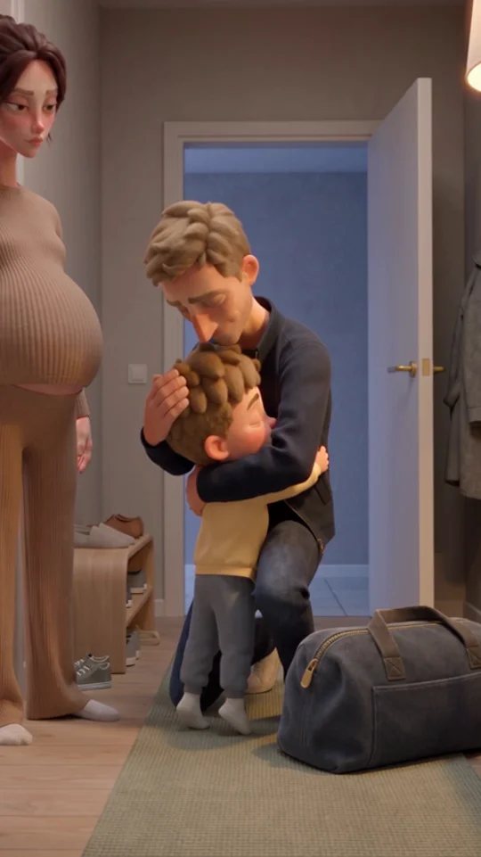
Отец уходит. Камера остаётся внутри с матерью и сыном. Она отвечает: «Не знаю».
Референсы — строго в этом порядке
SCENE CONTEXT SROK episode 4, scene 5. Fifteen seconds, ONE CONTINUOUS SHOT, ZERO CUTS. The father is already crouching in an embrace with preschool Misha. He already wears his blue jacket; the single travel bag beside him is zipped shut, rabbit inside. Dressing and packing happened between scenes. THE DEVICE — RISE WITH THE FATHER, REMAIN WITH THE FAMILY. A modest camera rise accompanies him standing; the camera then stays inside with mother and son while he leaves. Misha wants more time with Dad and a simple answer about tomorrow. Father receives the embrace without making a promise. Mother answers honestly and offers physical reassurance. Restrained ordinary behaviour, active attention, no tears or invented farewell words. ACTIVE REFERENCES @image1 — FATHER IN JACKET. Preserve his tall lean build, sandy swept forelock, grey-blue eyes, long nose, freckles and light stubble. Open navy zip jacket over grey crewneck sweater, dark jeans, white sneakers, wedding ring. Use identity and clothes, not the fixed smile, card pose, grey field or panels. @image2 — MISHA. Same small preschool boy, tousled sandy-brown felted hair, brown eyes, freckles, pink nose and round cheeks. Butter-yellow long-sleeve pajamas, grey-blue trousers, white socks. Keep child-sized body and hands. @image3 — MOTHER. Same narrow oval face, hooded hazel-olive eyes, freckles and left-cheek beauty mark, brown hair in charcoal claw clip, temple strands and gold studs. Camel ribbed top and matching wide trousers, white socks, FULL 28-WEEK PREGNANCY BELLY. @image4 — HALL. Preserve pale timber floor, sage runner, left interior doorway/shoe bench, right pale-wood console, warm pendant and cream front door. From inside: handle LEFT, hinges RIGHT. One starting-state change: the door is already open inward toward the right wall. @image5 — ONE BAG. Use only the CLOSED UPPER VIEW: slate-blue canvas, two charcoal handles, brass zipper fully shut. Rabbit and clothes are packed inside and invisible; the lower open view never appears. All figures share the established tactile stylized 3D finish: flocked matte skin, felted hair, knit, woven canvas, wood and dimensional light falloff. Reference sheets supply designs only, never panels or studio backgrounds. LOCATION MAP Camera stays inside, slightly left of the hall centreline, looking toward the front door. Mother stands beside the left interior doorway; Misha stands a small step to her right on the runner. Father crouches just beyond him, centre-right, three-quarter to camera so both embracing faces read. Bag is beside father's anatomical LEFT foot, clear of the boy. Door starts about 60 degrees open, hinged at screen-right and held toward the right wall. Mother and child stay LEFT of its swing. Father crosses the clear central doorway with bag in LEFT hand; RIGHT hand controls the door. Crop the mirror's reflective surface out of the composition. Door hardware, console and furniture stay fixed. FIRST FRAME At about 85 centimetres camera height, father and son are already in a quiet close embrace, both physically supported on the floor. Misha's cheek is near his father's shoulder, with his face partly visible in profile. Mother is nearby on the left, her pregnancy clear. The single closed bag rests beside the father's left foot; the open front doorway is behind him. FORMAT MODE Native vertical 9:16, one full-frame image, no split screen, captions or borders. OPTICS Fixed FOV 47 degrees, approximately f/5.6. Choose the starting distance to contain the crouched father and small child together, with mother nearby. After the modest camera rise, keep BOTH mother's face and Misha's face visible at useful scale, as well as her belly. The final composition is an adult-and-child group, not an adult-height portrait. Child height and head size remain natural. No focal-length change or digital zoom. CAMERA 0.0–3.0: hold at child height for the embrace and release. 3.0–5.0: ONE gentle physical rise, about 30 centimetres from 85 to 115 centimetres, with slight compensating tilt as father stands. Do not rise to adult eye height; the lower frame continues to contain Misha. 5.0–15.0: camera settled inside. Father leaves through the doorway; camera stays with mother and son, keeping both faces and the final handhold readable. No hidden cut, zoom, orbit or later reframing. ACTION SEQUENCE 0.0–1.6: the embrace is already happening. Misha holds both arms around Dad's shoulders. Father supports his upper back without lifting him. Mother waits nearby. 1.6–3.0: Misha slowly loosens his arms. Father releases in response, briefly settles his hands at the boy's upper arms, then withdraws. Their hands separate before he stands. 3.0–5.0: father rises naturally; camera makes its single small rise. Misha stays on both feet and follows him with his eyes. 5.0–6.0: father bends enough to grip BOTH short bag handles together in his LEFT hand and lifts the CLOSED bag once. It hangs with weight at his left thigh. 6.0–9.0: two ordinary steps through the already-open doorway. Bag stays left, right hand free. While crossing the threshold he takes the door's free latch edge from the landing side with his RIGHT hand. His body and bag clear the threshold before the leaf swings across it. This is his only exit. 9.0–10.0: from outside he gently pulls the SAME door shut. Right hand withdraws behind the leaf before the gap closes; the fixed right-side hinges remain unchanged. Soft latch. Father and bag stay outside and out of view. Misha watches. 10.0–10.2: Misha turns his head slightly up toward mother, showing his mouth in readable three-quarter profile. 10.2–12.0: MISHA says quietly and simply in Russian: "Папа завтра придёт?" Natural preschool voice, asking a real question. Mother listens with closed mouth. 12.0–12.3: natural pause. Mother looks down toward him; her mouth stays visible. 12.3–13.5: MOTHER says quietly and evenly in Russian: "Не знаю." Plain honest uncertainty. Misha listens with closed mouth. 13.5–15.0: mother's LEFT hand takes Misha's RIGHT hand. They begin a small turn toward the interior doorway at frame-left. Their continued walk happens after this clip. Hold joined hands and readable faces; no further speech. ANIMATION STYLE Restrained tactile stylized 3D character animation on twos within a 24 fps output, with a smoothly weighted physical camera rise. Natural child-sized balance, measured release of the embrace, believable standing and two walking steps. Small cloth settling follows body motion. Quiet listening stays alive through breath and an occasional blink; no idle swaying or broad pantomime. PHYSICS Exactly three people initially, each with two arms, two hands and ten fingers. Misha stays on the floor during the hug. One closed bag, lifted once and carried continuously in father's LEFT hand; RIGHT hand closes the door. Father and bag clear the threshold before its single right-hinged closing swing. Mother and son remain clear of the leaf. Rabbit stays invisible inside the bag. At the end exactly two people remain visible, mother's LEFT hand holding child's RIGHT. All contacts are physical, without intersecting bodies, door or fabric. LIGHTING Match the hallway's ordinary warm evening light: soft pendant around 3000K, gentle warm spill from the left interior room and weaker neutral landing light through the open doorway. Closing the door removes only that small landing contribution. Mother's face, the boy's mouth and the pregnancy remain readable under the existing hall light; no dramatic exposure change. Soft dimensional face modelling, grounded contact shadows and matte tactile surfaces. AUDIO NO BACKGROUND MUSIC, NO SCORE, NO MUSICAL STING. Exactly TWO non-overlapping Russian passages, once each: MISHA, "Папа завтра придёт?"; then MOTHER, "Не знаю." Accurate visible lip-sync only on the current speaker. Father never speaks. Otherwise only quiet room tone, soft jacket/pajama rustle, two sneaker steps, canvas handles taking weight and a gentle door latch. No invented goodbye, crying, gasp, ringtone or dramatic impact. QUALITY Stable faces, small-child scale and full maternal pregnancy throughout the continuous move. Preserve navy jacket, yellow-grey pajamas, camel knit and closed slate-blue bag. Legible mouth shapes during both lines, coherent hand release and handholding, natural door geometry. Fine natural film grain, tactile matte materials. No text, logos, numbers, subtitles, UI or reflected duplicate people. TECHNICAL PARAMETERS Seedance 2.5, direct BytePlus/ByteDance, 480p, vertical 9:16, 24 fps output. Exactly 15.0 seconds, ONE continuous shot and ZERO cuts. One small camera rise during 3.0–5.0 seconds, then a settled camera. Real time, no slow motion or speed ramp. Generate synchronized Russian dialogue and quiet diegetic sound. POSITIVE LOCKS Father already wears navy jacket; one bag is already closed, rabbit entirely inside. Embrace and release receive three seconds before he stands. Camera rises only 30 centimetres and retains mother AND preschool son. Father carries bag left, exits once, closes the door right-handed from outside, and stays outside. Door's inside handle is left, hinges right; family remains clear of its swing. After closure only mother and Misha remain visible. Child asks first, mother answers after a pause; only the speaker's lips articulate. Mother's left hand takes child's right hand. ONE continuous shot, ZERO cuts, fifteen seconds. NO BACKGROUND MUSIC, NO SCORE, NO MUSICAL STING. No music of any kind.Скачать .txt ↓
SCENE CONTEXT SROK episode 4, scene 5, OPTICS REVISION V2. Same story and continuous-take timing, with a narrower perspective and tighter subject framing. Fifteen seconds, ONE CONTINUOUS SHOT, ZERO CUTS. The father is already crouching in an embrace with preschool Misha. He already wears his blue jacket; the single travel bag beside him is zipped shut, rabbit inside. Dressing and packing happened between scenes. THE DEVICE — RISE WITH THE FATHER, REMAIN WITH THE FAMILY. A modest camera rise accompanies him standing; the camera then stays inside with mother and son while he leaves. Misha wants more time with Dad and a simple answer about tomorrow. Father receives the embrace without making a promise. Mother answers honestly and offers physical reassurance. Restrained ordinary behaviour, active attention, no tears or invented farewell words. ACTIVE REFERENCES @image1 — FATHER IN JACKET. Preserve his tall lean build, sandy swept forelock, grey-blue eyes, long nose, freckles and light stubble. Open navy zip jacket over grey crewneck sweater, dark jeans, white sneakers, wedding ring. Use identity and clothes, not the fixed smile, card pose, grey field or panels. @image2 — MISHA. Same small preschool boy, tousled sandy-brown felted hair, brown eyes, freckles, pink nose and round cheeks. Butter-yellow long-sleeve pajamas, grey-blue trousers, white socks. Keep child-sized body and hands. @image3 — MOTHER. Same narrow oval face, hooded hazel-olive eyes, freckles and left-cheek beauty mark, brown hair in charcoal claw clip, temple strands and gold studs. Camel ribbed top and matching wide trousers, white socks, FULL 28-WEEK PREGNANCY BELLY. @image4 — HALL. Preserve pale timber floor, sage runner, left interior doorway/shoe bench, right pale-wood console, warm pendant and cream front door. From inside: handle LEFT, hinges RIGHT. One starting-state change: the door is already open inward toward the right wall. @image5 — ONE BAG. Use only the CLOSED UPPER VIEW: slate-blue canvas, two charcoal handles, brass zipper fully shut. Rabbit and clothes are packed inside and invisible; the lower open view never appears. All figures share the established tactile stylized 3D finish: flocked matte skin, felted hair, knit, woven canvas, wood and dimensional light falloff. Reference sheets supply designs only, never panels or studio backgrounds. LOCATION MAP Camera stays inside, slightly left of the hall centreline, looking toward the front door. Mother stands beside the left interior doorway; Misha stands a small step to her right on the runner. Father crouches just beyond him, centre-right, three-quarter to camera so both embracing faces read. Bag is beside father's anatomical LEFT foot, clear of the boy. Door starts about 60 degrees open, hinged at screen-right and held toward the right wall. Mother and child stay LEFT of its swing. Father crosses the clear central doorway with bag in LEFT hand; RIGHT hand controls the door. Crop the mirror's reflective surface out of the composition. Door hardware, console and furniture stay fixed. FIRST FRAME A TIGHT MEDIUM of father and Misha in their embrace, composed around their heads, shoulders and the child's torso. Camera at about 85 centimetres, standing farther away with a 29-degree field of view. The mother is only partly visible at the left edge initially. The father's feet, whole bag, full door and ceiling are NOT simultaneous framing requirements: they remain in their established positions outside the crop or at its edges. No large empty room around the figures. Child and adult faces retain natural proportions, without enlargement from proximity to the lens. FORMAT MODE Native vertical 9:16, one full-frame image, no split screen, captions or borders. OPTICS Fixed FOV 29 degrees, approximately f/4, with the camera farther from the family, roughly 3.0-3.6 metres from the initial embrace. Set distance to obtain a tight medium grouping, never move the lens close to the nearest face to fill the frame. Foreground hands and heads have restrained size; background perspective feels calmer and the corridor falls softly out of focus. The opening prioritizes the embrace. The ending prioritizes the mother's face and Misha's face together in a compact two-person medium, the top of frame just above her head and the lower boundary around his upper thighs. Full feet, complete bag, entire door leaf, console and mirror may stay outside the crop. Keep continuity offscreen instead of widening to prove every object exists. There is no full-room establishing shot. No zoom, lens swap or wide-angle distortion. CAMERA 0.0-3.0: hold the tight embrace from child height and the farther camera position. Mother may be partly cropped at the side; the faces participating in the hug are the subject. 3.0-5.0: one gentle physical rise of about 30 centimetres, from 85 to 115 centimetres, as father stands. A slight continuous compensating tilt allows his rise, then settles on mother and son. Do not rise to adult eye height, pull back, or widen the lens. The same 29-degree perspective remains throughout. 5.0-15.0: hold a compact mother-and-child composition at the inner end of the hallway. Father moves through the background doorway or the right edge and exits once; his bag pickup may occur partly below the framing, and the door closure can finish at the rear edge. We hear the latch and see father absent, without reframing to demonstrate the entire leaf. Mother's face, Misha's face and the final handhold remain readable. No hidden cut, zoom, orbit or further camera move. ACTION SEQUENCE 0.0–1.6: the embrace is already happening. Misha holds both arms around Dad's shoulders. Father supports his upper back without lifting him. Mother waits nearby. 1.6–3.0: Misha slowly loosens his arms. Father releases in response, briefly settles his hands at the boy's upper arms, then withdraws. Their hands separate before he stands. 3.0–5.0: father rises naturally; camera makes its single small rise. Misha stays on both feet and follows him with his eyes. 5.0–6.0: father bends enough to grip BOTH short bag handles together in his LEFT hand and lifts the CLOSED bag once. It hangs with weight at his left thigh. 6.0–9.0: two ordinary steps through the already-open doorway. Bag stays left, right hand free. While crossing the threshold he takes the door's free latch edge from the landing side with his RIGHT hand. His body and bag clear the threshold before the leaf swings across it. This is his only exit. 9.0–10.0: from outside he gently pulls the SAME door shut. Right hand withdraws behind the leaf before the gap closes; the fixed right-side hinges remain unchanged. Soft latch. Father and bag stay outside and out of view. Misha watches. 10.0–10.2: Misha turns his head slightly up toward mother, showing his mouth in readable three-quarter profile. 10.2–12.0: MISHA says quietly and simply in Russian: "Папа завтра придёт?" Natural preschool voice, asking a real question. Mother listens with closed mouth. 12.0–12.3: natural pause. Mother looks down toward him; her mouth stays visible. 12.3–13.5: MOTHER says quietly and evenly in Russian: "Не знаю." Plain honest uncertainty. Misha listens with closed mouth. 13.5–15.0: mother's LEFT hand takes Misha's RIGHT hand. They begin a small turn toward the interior doorway at frame-left. Their continued walk happens after this clip. Hold joined hands and readable faces; no further speech. ANIMATION STYLE Restrained tactile stylized 3D character animation on twos within a 24 fps output, with a smoothly weighted physical camera rise. Natural child-sized balance, measured release of the embrace, believable standing and two walking steps. Small cloth settling follows body motion. Quiet listening stays alive through breath and an occasional blink; no idle swaying or broad pantomime. PHYSICS Exactly three people initially, each with two arms, two hands and ten fingers. Misha stays on the floor during the hug. One closed bag, lifted once and carried continuously in father's LEFT hand; RIGHT hand closes the door. Father and bag clear the threshold before its single right-hinged closing swing. Mother and son remain clear of the leaf. Rabbit stays invisible inside the bag. At the end exactly two people remain visible, mother's LEFT hand holding child's RIGHT. All contacts are physical, without intersecting bodies, door or fabric. LIGHTING Match the hallway's ordinary warm evening light: soft pendant around 3000K, gentle warm spill from the left interior room and weaker neutral landing light through the open doorway. Closing the door removes only that small landing contribution. Mother's face, the boy's mouth and the pregnancy remain readable under the existing hall light; no dramatic exposure change. Soft dimensional face modelling, grounded contact shadows and matte tactile surfaces. AUDIO NO BACKGROUND MUSIC, NO SCORE, NO MUSICAL STING. Exactly TWO non-overlapping Russian passages, once each: MISHA, "Папа завтра придёт?"; then MOTHER, "Не знаю." Accurate visible lip-sync only on the current speaker. Father never speaks. Otherwise only quiet room tone, soft jacket/pajama rustle, two sneaker steps, canvas handles taking weight and a gentle door latch. No invented goodbye, crying, gasp, ringtone or dramatic impact. QUALITY Stable faces, small-child scale and full maternal pregnancy throughout the continuous move. Preserve navy jacket, yellow-grey pajamas, camel knit and closed slate-blue bag. Legible mouth shapes during both lines, coherent hand release and handholding, natural door geometry. Fine natural film grain, tactile matte materials. No text, logos, numbers, subtitles, UI or reflected duplicate people. TECHNICAL PARAMETERS Seedance 2.5, direct BytePlus/ByteDance, 480p, vertical 9:16, 24 fps output. Exactly 15.0 seconds, fixed 29-degree perspective, ONE continuous shot and ZERO cuts. One small camera rise during 3.0–5.0 seconds, then a settled camera. Real time, no slow motion or speed ramp. Generate synchronized Russian dialogue and quiet diegetic sound. POSITIVE LOCKS Father already wears navy jacket; one bag is already closed, rabbit entirely inside. Embrace and release receive three seconds before he stands. Camera stays farther away with a fixed 29-degree field of view, rises only 30 centimetres, and retains mother AND preschool son in a compact frame. Faces and the embrace dominate; the whole room and every prop are never required simultaneously. Father carries bag left, exits once, closes the door right-handed from outside, and stays outside. Door's inside handle is left, hinges right; family remains clear of its swing. After closure only mother and Misha remain visible. Child asks first, mother answers after a pause; only the speaker's lips articulate. Mother's left hand takes child's right hand. ONE continuous shot, ZERO cuts, fifteen seconds. NO BACKGROUND MUSIC, NO SCORE, NO MUSICAL STING. No music of any kind.Скачать .txt ↓
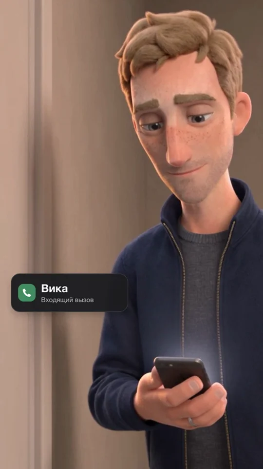
Звонит Вика. Муж смотрит на дверь, звонок заканчивается. Он остаётся стоять. Финал без поясняющего титра.
Референсы — строго в этом порядке
SCENE CONTEXT SROK episode 4, FINAL SCENE. The father has left his wife and preschool son inside their home, but he has not walked away from the closed apartment door. Outside on the landing, his phone receives Vika's call. He looks at the screen, then at the closed door. The phone stops vibrating on its own. He remains where he is. One continuous ten-second shot, ZERO CUTS, ZERO CAMERA MOVEMENT, no dialogue and no moral title. This is unresolved waiting: he neither returns inside nor walks toward Vika, and he does not accept or decline the call. SHOT SIZE FIRST — A TIGHT MEDIUM: his complete head, shoulders and torso down to the lower ribs, plus the phone held near the bottom of the frame. The closed door appears only as a narrow contextual section at frame-left. The full door, floor, ceiling, shoes and travel bag are deliberately outside this framing. Do not widen the shot to prove they exist. THE DEVICE — THE CAMERA STAYS AFTER THE SOUND STOPS. A completely stationary, restrained long-perspective composition holds the man and a small piece of the closed door. The last 2.5 seconds contain his continuing attention to the door after the call ends. No push-in, pullback, reveal, rise, lateral slide, focus pull or inside-object view. Real time throughout, no slow motion or speed ramps. ACTING TASK — FATHER. Shared direction: remain quiet outside the sleeping family's home. His motive is to avoid making the next decision irreversible. His goal is to find some permission to move, from the phone or from the people behind the door. His obstacle is that neither gives him a reassuring answer. Tactic: check the caller, then measure whether he can turn his back on the closed door; keep listening rather than acting. His stillness is an unfinished decision, not a blank face or a pose of regret. He gives the phone no answer and makes no gesture to the handle. Safety: mentally engaged eyes, natural small breaths and occasional blinking, no glassy freeze. No tears, clenched fists, wall leaning, theatrical sigh, smile or dramatic facial choreography. ACTIVE REFERENCES @image1 — THE FATHER IN HIS BLUE JACKET. Preserve his established tall lean build, sandy light-brown swept forelock, grey-blue eyes, long nose, freckles and short stubble. Same open dark ink-blue jacket over grey crewneck sweater, dark jeans, white sneakers and wedding ring. Only his identity, wardrobe and tactile design come from the sheet, not its smile, grey background, pose, panels or studio lighting. Full clothing description defines continuity, not full-body framing. @image2 — THE LANDING OUTSIDE THE FAMILY DOOR. Preserve the greige wall and closed warm light-grey door with its plain rectangular inset border, brass handle on the RIGHT and hinges on the LEFT when viewed from outside. Soft warm ceiling illumination. Use the location's surfaces and light, NOT its wide framing. Only a narrow part of the closed door and adjacent wall need appear; the ceiling fixture, entire doorway and tiled floor stay out of shot. Continuity outside frame: the same zipped slate-blue canvas bag is standing at his feet, with the rabbit and two shirts inside. It stays there, below the frame. Do not introduce a second visible bag or widen the camera to include it. His phone is one plain dark slim smartphone with rounded corners; no brand or readable interface. Its screen produces a faint soft glow during the incoming call. Caller identification will be added in editing, so generate no text, name, number or call buttons. Keep the established tactile stylized 3D finish: softly flocked matte skin, felted hair, knit and woven jacket, rounded sculpted forms, restrained brass and matte plaster. Dimensional face modelling, soft contact shadows and subtle natural grain. No paper-painting treatment, glossy plastic, glitter or photoreal pores. LOCATION MAP The man stands to the RIGHT of the closed door, close enough that a small turn toward frame-left brings the door into his attention. His feet stay planted at the same spot throughout. His face is initially three-quarter toward the camera, large in the right two-thirds. The door's right jamb and a strip of its panel occupy the left edge; the rest of the background is soft greige wall. His RIGHT hand holds the phone at lower-sternum level with the screen toward his eyes and slightly oblique to camera. His LEFT arm rests naturally below the crop. The bag stays on the floor, outside the crop. No other person or reflection appears. FIRST FRAME Tight medium portrait, crown to lower ribs, the father at frame-right and a narrow closed-door strip at frame-left. His complete face is clear, with little headroom; no ceiling or large empty hall. He already holds one dark phone low in his right hand, visible at the bottom of the composition. No walking or pocket retrieval is required. FORMAT MODE Native vertical 9:16, one full-frame continuous shot. No panels, split screen, border or generated typography. OPTICS Fixed FOV 29 degrees, approximately f/4. A longer-perspective tight medium from a respectful camera distance, not a wide lens close to his face or hands. Choose working distance to hold the crown-to-lower-ribs crop with natural face and phone proportions. The phone is close to his body, not thrust toward the camera. The face is the primary focus; the nearby phone and door strip remain intelligible, background gently soft. Fix lens and focus throughout. No enlarged nose, foreground hand or converging corridor perspective. CAMERA 0.0–10.0: perfectly still camera at roughly his upper-chest to eye level, with a slight three-quarter viewing angle. Fixed tight-medium composition. No zoom, dolly, pan, tilt, orbit, reframing or hidden transition. No widening to show his legs, bag or entire door. One uninterrupted held shot. ACTION SEQUENCE 0.0–0.4: he is already standing outside the closed door, phone in his right hand near his lower sternum. Quiet room tone. 0.4–2.5: the incoming phone call begins as restrained rhythmic haptic buzzing. Its screen glows faintly without any legible content. He looks down at the screen to identify who is trying to reach him. His thumb rests along the side, away from the display; he neither taps nor swipes. 2.5–4.5: leaving the phone in exactly the same hand and position, he turns his attention and head a little toward the closed door at frame-left. Keep his face readable in three-quarter profile; he does not turn his back to camera. He checks the silence from inside as if it might tell him what to do. The phone continues vibrating softly. 4.5–7.5: he stays there with the phone low in his hand, attention on the closed door. No reach toward the handle, knock, step, call acceptance or rejection. 7.5: the haptic buzzing stops ON ITS OWN; the screen loses its soft call glow. His thumb and fingers have not touched the screen. No beep or call-ending button animation. 7.5–10.0: hold him after the call has ended. He keeps looking toward the closed door, still in exactly the same position. Natural breathing and alive listening, no new action. End unresolved, before any decision to go or return. No fade, caption, moral or door opening. ANIMATION STYLE Restrained tactile stylized 3D feature animation, poses on twos within a 24 fps output, with minimal organic secondary motion in jacket and hair. Weight stays planted; only small natural attention changes and breathing. Phone movement is no larger than a subtle haptic tremor. The final stillness remains acted, not a frozen frame. PHYSICS Exactly one man with two arms, two hands and ten fingers, maintaining natural anatomy even when cropped. One right hand supports one phone continuously. No extra hand, phone or reflection. Thumb stays off the screen. The door stays shut; handle and wall remain fixed. The bag remains on the floor outside the frame; he neither lifts nor kicks it. No leaning or floating. LIGHTING Soft warm landing light around 3000K shapes the forehead, cheek and blue jacket from upper-left. Gentle neutral wall bounce keeps the shadow-side eye readable. A small amount of phone glow affects only his lower fingers during the call, not his entire face. Keep the door and background quieter than the face; no flat studio illumination, dramatic rim glow or lighting change beyond the phone screen gently dimming at 7.5 seconds. AUDIO NO BACKGROUND MUSIC, NO SCORE, NO MUSICAL STING. No speech, narration, crying, sigh, gasp, melody or voices behind the door. Quiet diegetic landing ambience only, with restrained repeated smartphone haptic buzzing from 0.4 to 7.5 seconds. Buzzing stops by itself at 7.5, followed by 2.5 seconds of low natural room tone. No loud notification ping, rejection tone, dramatic impact or door sound. QUALITY Stable character identity, dimensional facial texture and natural quiet acting. Tightly controlled image scale: face and phone matter, architecture stays partial. Soft natural grain, clear eyes without forced catchlights. No text, letters, numbers, logos, subtitles, symbols or interface anywhere. Keep enough uncluttered lower-left background for a small caller graphic added in editing; do not widen or shift the subject to make a large blank area. TECHNICAL PARAMETERS Seedance 2.5, direct BytePlus/ByteDance, 480p, vertical 9:16, 24 fps output, exactly 10 seconds. One stationary continuous shot, ZERO cuts, fixed FOV 29 degrees. Real time throughout, no slow motion or speed ramps. Generate only synchronized haptic buzzing and quiet room tone. POSITIVE LOCKS One visible father, same face and navy-jacket outfit as @image1, two arms and two hands with ten fingers. The door matches @image2 and remains closed at frame-left; the rest of the landing stays outside the tight crop. Framing stays crown-to-lower-ribs, with natural face and hand proportions and fixed29-degree perspective. One phone stays in his right hand near his body; thumb stays off its screen. The incoming call stops by itself, while he continues looking at the closed door. The last2.5seconds hold the same unresolved position without a new action. The travel bag remains below the frame at his feet. One continuous shot, zero cuts, zero camera movement. The soundtrack contains only room tone and phone vibration; everyone is silent. All visible surfaces and the phone are unlettered; caller text is reserved for editing. NO BACKGROUND MUSIC, NO SCORE, NO MUSICAL STING. No music of any kind.Скачать .txt ↓
После просмотра первых сцен мы заметили избыток широких ракурсов. Для портретов выбрали ориентир 18°, для тесных средних планов — 29°. Детали — 12–18°. Это указания для генератора, а не подтверждённые параметры камеры. Не пытайся показать лицо, сумку и всю комнату одновременно.
04 / Предметы вместо объяснений
Шесть предметных перебивок: кадры, промпты и порядок референсов. Генерируй по 4 секунды, а для монтажа выбирай 2–2,5 секунды. Используй выборочно: история не должна останавливаться ради красивого кадра.
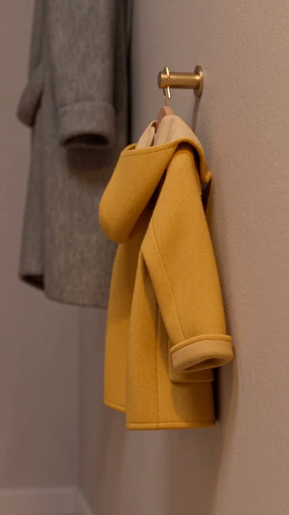
После первой фразы и реакции мужа, перед сборами.
Референсы по порядку
ACTIVE REFERENCES @image1 — FAMILY HALLWAY: use its existing mustard-yellow child's coat on the LOWER brass hook, the greige plaster, nearby larger grey coat, warm pendant lighting and tactile materials. Take these designs and lighting only, not the reference's wide framing. This is the same child's yellow coat already present, not newly introduced clothing. The established SROK visual language is tactile dimensional stylized 3D animation: felt, woven canvas, matte soft plaster and rounded sculpted forms, with coherent contact shadows and fine fiber texture. Keep depth and volume, not a flat painted illustration. Warm directional practical light around 2900–3000K models the material, gentle cooler ambient fill separates the background. Any glitter, sparkle or iridescence in the reference is NOT carried over. No glossy plastic, photoreal pores, paper-painting texture or decorative grain crawl. SCENE CONTEXT SROK episode 4, 'Things', standalone dramatic object insert. The child's ordinary life is still here while the adults discuss leaving; an insert after the first conversation, before the packing. No new plot event occurs. No visible people, body parts or living animals. One single continuous shot, ZERO cuts. FRAMING AND OPTICS A close still life of the small mustard-yellow coat hanging from its existing low brass wall hook. The empty little sleeve and soft cuff are the emotional subject, large in the lower-right two thirds; a partial brass hook and a sliver of the larger grey coat above establish its child-sized scale. The coat remains empty, with no body inside. The large grey coat is only contextual, not asserted to belong to the father. Keep the console, key dish, keys, mirror, floor, doors and entire hallway outside this very tight crop. Preserve the actual hook positions from the reference. Fixed FOV 18 degrees, natural compressed perspective from a respectful working distance, approximately f/4. Macro scale where specified comes from the narrow field and framing, not from a wide lens pushed close. One primary focus plane remains fixed; background softly defocused but the named subject fully readable. Do not widen to show the whole location. Vertical 9:16. CAMERA AND ACTION Exactly 4.0 seconds, real time throughout, no slow motion or speed ramps. 0.0–4.0: a perfectly locked-off camera holds the already-established still life, zero dolly, zoom, pan, tilt, orbit, handheld shake or rack focus. Static held object animation, stable geometry and steady light; quiet observed duration is intentional. No autonomous movement added to make the image busier. The first and last frames share the exact same composition. PHYSICS AND CONTINUITY The coat hangs under gravity from the hook, both sleeves naturally empty. Completely settled cloth, no wind or autonomous movement. No changes in the hook or clothing. LIGHT AND SOUND Preserve the reference's warm practical evening light with a soft cool-neutral fill and natural contact shadows. Exposure and color remain fixed. No pulsing lights, dramatic shafts or lens flare. NO BACKGROUND MUSIC, NO SCORE, NO MUSICAL STING. No voices, dialogue, humming, breathing, narration or singing. Diegetic only: low steady hallway room tone and distant, nonrhythmic building ventilation only. Sound is quiet, suitable for laying under an existing scene. DELIVERY AND LOCKS Seedance 2.5, direct BytePlus, 480p, vertical 9:16, 24 fps output, exactly 4 seconds, one shot, zero cuts. Stable object identities and material depth throughout. Everything visible is unlettered: no text, letters, numbers, logos, captions or UI. Props remain inert and keep their established state. The subject is large within the specified tight crop; the rest of the location exists outside the frame. One stationary viewpoint and a single consistent focal length. No music of any kind.Скачать .txt ↓
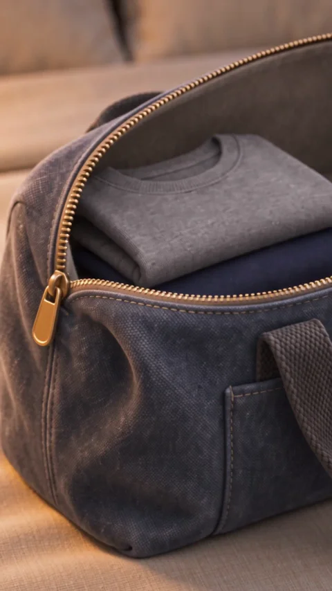
После укладки второй футболки, перед квартирой Вики.
Референсы по порядку
ACTIVE REFERENCES @image1 — FAMILY BEDROOM: use the warm bedside-lamp light, cream bed linen and muted sage throw. The bed is the support beneath the bag; reproduce its textiles and evening atmosphere only, not a wide room view. @image2 — ONE SLATE-BLUE CANVAS TRAVEL BAG: reference sheet shows TWO VIEWS OF THE SAME SINGLE BAG. Use only its design: charcoal woven handles, curved brass zipper, unbranded front pocket and soft grey lining. In this shot it is OPEN as in the lower view, containing one folded grey shirt and one folded dark navy shirt. The reference background and multiple-panel layout are excluded. The established SROK visual language is tactile dimensional stylized 3D animation: felt, woven canvas, matte soft plaster and rounded sculpted forms, with coherent contact shadows and fine fiber texture. Keep depth and volume, not a flat painted illustration. Warm directional practical light around 2900–3000K models the material, gentle cooler ambient fill separates the background. Any glitter, sparkle or iridescence in the reference is NOT carried over. No glossy plastic, photoreal pores, paper-painting texture or decorative grain crawl. SCENE CONTEXT SROK episode 4, 'Things', standalone dramatic object insert. The departure becomes a physical object: an open zipper and two packed shirts. Intended around the end of the packing scene, before Vika. No new plot event occurs. No visible people, body parts or living animals. One single continuous shot, ZERO cuts. FRAMING AND OPTICS An extreme close-up from OUTSIDE the bag at a low oblique side angle: the curved open brass zipper and its stationary slider occupy the left foreground; the grey shirt fold and a narrow dark navy cloth layer are visible inside behind it. Soft slate-blue canvas fills the lower edge, a tiny cream bed-linen area establishes support. The open mouth reads clearly even though most of the bag is cropped. This is an external zipper detail, not the previous scene's camera-inside-the-bag viewpoint. There is no rabbit yet. No packing gesture, hand or person enters. It is a pause AFTER both shirts have been placed and BEFORE Misha brings his toy. Fixed FOV 12 degrees, natural compressed perspective from a respectful working distance, approximately f/4. Macro scale where specified comes from the narrow field and framing, not from a wide lens pushed close. One primary focus plane remains fixed; background softly defocused but the named subject fully readable. Do not widen to show the whole location. Vertical 9:16. CAMERA AND ACTION Exactly 4.0 seconds, real time throughout, no slow motion or speed ramps. 0.0–4.0: a perfectly locked-off camera holds the already-established still life, zero dolly, zoom, pan, tilt, orbit, handheld shake or rack focus. Static held object animation, stable geometry and steady light; quiet observed duration is intentional. No autonomous movement added to make the image busier. The first and last frames share the exact same composition. PHYSICS AND CONTINUITY One bag rests with weight on the bed. The brass zipper remains open and still, both shirts remain inside, nothing closes itself. No toy, loose new garment or additional bag appears. LIGHT AND SOUND Preserve the reference's warm practical evening light with a soft cool-neutral fill and natural contact shadows. Exposure and color remain fixed. No pulsing lights, dramatic shafts or lens flare. NO BACKGROUND MUSIC, NO SCORE, NO MUSICAL STING. No voices, dialogue, humming, breathing, narration or singing. Diegetic only: very soft bedroom room tone and distant muffled household ventilation only. Sound is quiet, suitable for laying under an existing scene. DELIVERY AND LOCKS Seedance 2.5, direct BytePlus, 480p, vertical 9:16, 24 fps output, exactly 4 seconds, one shot, zero cuts. Stable object identities and material depth throughout. Everything visible is unlettered: no text, letters, numbers, logos, captions or UI. Props remain inert and keep their established state. The subject is large within the specified tight crop; the rest of the location exists outside the frame. One stationary viewpoint and a single consistent focal length. No music of any kind.Скачать .txt ↓
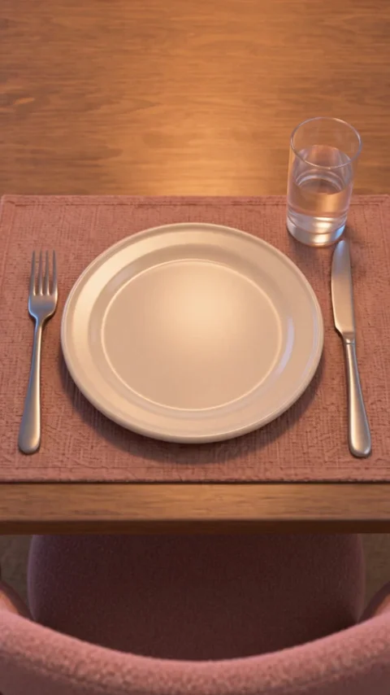
После установки второй тарелки и начала ожидания.
Референсы по порядку
ACTIVE REFERENCE @image1 — A FINISHED FRAME FROM THE EXISTING SROK EPISODE. This is the precise source for object placement, materials and light. Use the NEAR GUEST PLACE SETTING IN THE BOTTOM HALF: the large ivory plate nearest the bottom edge, its pink woven placemat, one fork to plate-left, one knife to plate-right, one half-full clear glass to plate-upper-right, and the curved pink empty guest-chair back at the bottom. The far plate immediately in front of the blonde woman is a DIFFERENT, OCCUPIED place setting. Both plates exist in the room; this insert shows ONLY the NEAR GUEST PLATE. Do NOT use the former one-plate location design. Do NOT copy the wide composition or show the woman. STORY AND COMPOSITION A still, unoccupied guest place waiting for someone who has not arrived. Single close object insert, not a new scene or an empty apartment. Vika stays seated at the far end as in the reference but is completely above and OUTSIDE the tight frame. Her hands, torso, face, plate and phone are outside the image. They have not disappeared from the room. SHOT SIZE FIRST: a very close oblique downward view of the NEAR guest plate. The plate fills approximately 70 percent of the image width and sits in the lower-middle. Its entire circular rim is visible as an ellipse on the pink mat. Fork on the left and knife on the right frame it. The guest's clear half-full water glass sits at upper-right. A narrow soft pink arc of the empty guest-chair back may occupy the very bottom edge only. The rest of the picture is just this same tabletop and placemat; NO second mat, second plate, room horizon, kitchen, window, lampshade or people appear. Look diagonally down onto the NEAR setting from slightly above its empty chair. This is NOT a reverse view of the far chair. The table extends out of the upper edge before the opposite setting begins. CAMERA AND OPTICS Vertical 9:16, fixed18-degree FOV, f/4. Natural close-detail scale with compressed perspective, no wide-angle exaggeration. Camera at about50 degrees down to the table, not an overhead shot and not a frontal room view. Completely locked camera and locked focus, no push-in, pullback, drift, rack focus, cut or reframing. One uninterrupted4-second shot. Real time throughout, no slow motion or speed ramps. ACTION AND CONTINUITY 0.0–4.0: hold the already-composed near guest plate. Everything stays still. Exactly ONE visible empty ivory plate, ONE fork, ONE knife, ONE clear half-full glass and ONE pink mat. Objects keep the positions shown in @image1. Nothing is placed, removed, created, moved or touched. The guest chair remains empty; Vika remains at the opposite end outside frame. No food, steam, crumbs, fingerprints, hand shadows or independently moving objects. STYLE AND LIGHTING Match the source's tactile dimensional stylized3D animation: softly rounded ivory ceramic, fine woven pink placemat, warm grained wood, blush bouclé chair edge, gentle glass reflections. Coherent contact shadows and softly modelled volume, no flat painted illustration, glitter, glossy plastic or photographic realism. Warm 3000K practical light and subtle cool window fill remain steady. The quiet soft background is simply the tabletop, not a view of the room. AUDIO NO BACKGROUND MUSIC, NO SCORE, NO MUSICAL STING. Very low kitchen room tone and a faint refrigerator hum only. No voices, breathing, humming, narration, footsteps, plate clinks or music. DELIVERY AND LOCKS Direct BytePlus Seedance2.5,480p,9:16,24fps,exactly4seconds,one continuous shot,zero cuts. The occupied opposite place and its person stay entirely outside the tight frame. The visible NEAR guest plate remains present throughout; one plate, one fork, one knife, one glass, one mat. Every object remains stationary with stable shape and correct contact. All surfaces are unlettered: no text, numbers, logos, subtitles or UI. No music of any kind.Скачать .txt ↓
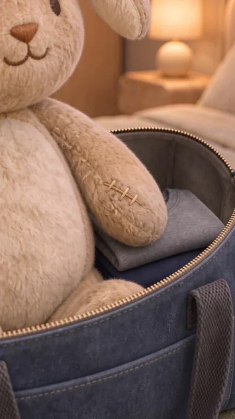
После передачи игрушки, реплики Миши и реакции отца.
Референсы по порядку
ACTIVE REFERENCES @image1 — FAMILY BEDROOM: warm bedside-lamp light and soft cream/sage bed textiles; location supplies light only within this tight detail. @image2 — ONE OPEN TRAVEL BAG: the sheet's two views describe the same slate-blue canvas bag, charcoal handles, brass zipper and grey lining. It contains the established grey and navy folded shirts. @image3 — MISHA'S SINGLE PLUSH RABBIT: exact oatmeal-beige plush, cream belly, embroidered face, bent LEFT ear and visible repair stitching on its LEFT forepaw. This is an inert cherished toy, not a living animal. Copy its small worn stitched repair exactly; no large new decorative badge. Use design only, not grey studio background. The established SROK visual language is tactile dimensional stylized 3D animation: felt, woven canvas, matte soft plaster and rounded sculpted forms, with coherent contact shadows and fine fiber texture. Keep depth and volume, not a flat painted illustration. Warm directional practical light around 2900–3000K models the material, gentle cooler ambient fill separates the background. Any glitter, sparkle or iridescence in the reference is NOT carried over. No glossy plastic, photoreal pores, paper-painting texture or decorative grain crawl. SCENE CONTEXT SROK episode 4, 'Things', standalone dramatic object insert. The toy is visibly loved and repaired: the child gives his father something that has comforted him. Insert after 'Пусть с тобой поспит', before the goodbye. No new plot event occurs. No visible people, body parts or living animals. One single continuous shot, ZERO cuts. FRAMING AND OPTICS A very tight external detail of the rabbit's LEFT FOREPAW with its small repaired seam and three visible pale stitches, resting naturally beside its cream plush belly. The rabbit is sitting upright on the folded clothes INSIDE the still-open slate-blue bag, as just placed by the child. A grey shirt fold and a narrow curved brass zipper edge beneath the toy provide immediate context. Focus the stitched repair and soft flattened fibers; the head and ears are cropped ABOVE the frame, the rest of the bag and bedroom remain outside the crop. The paw is the toy's attached front arm, not a detached plush piece or a human hand. All family members and their hands stay outside this extreme close-up. The father may still be steadying the toy higher up off-frame; this shot does not show him releasing it or changing its pose. Fixed FOV 12 degrees, natural compressed perspective from a respectful working distance, approximately f/4. Macro scale where specified comes from the narrow field and framing, not from a wide lens pushed close. One primary focus plane remains fixed; background softly defocused but the named subject fully readable. Do not widen to show the whole location. Vertical 9:16. CAMERA AND ACTION Exactly 4.0 seconds, real time throughout, no slow motion or speed ramps. 0.0–4.0: a perfectly locked-off camera holds the already-established still life, zero dolly, zoom, pan, tilt, orbit, handheld shake or rack focus. Static held object animation, stable geometry and steady light; quiet observed duration is intentional. No autonomous movement added to make the image busier. The first and last frames share the exact same composition. PHYSICS AND CONTINUITY Exactly one inert stuffed rabbit maintains the same seated pose in one open bag. Its attached patched forepaw lies naturally against its belly, cloth beneath bears its weight. No twitch, breathing, blinking, movement, stuffing leak or spontaneous zipper closure. LIGHT AND SOUND Preserve the reference's warm practical evening light with a soft cool-neutral fill and natural contact shadows. Exposure and color remain fixed. No pulsing lights, dramatic shafts or lens flare. NO BACKGROUND MUSIC, NO SCORE, NO MUSICAL STING. No voices, dialogue, humming, breathing, narration or singing. Diegetic only: soft bedroom room tone only, without toy squeaks or voices. Sound is quiet, suitable for laying under an existing scene. DELIVERY AND LOCKS Seedance 2.5, direct BytePlus, 480p, vertical 9:16, 24 fps output, exactly 4 seconds, one shot, zero cuts. Stable object identities and material depth throughout. Everything visible is unlettered: no text, letters, numbers, logos, captions or UI. Props remain inert and keep their established state. The subject is large within the specified tight crop; the rest of the location exists outside the frame. One stationary viewpoint and a single consistent focal length. No music of any kind.Скачать .txt ↓
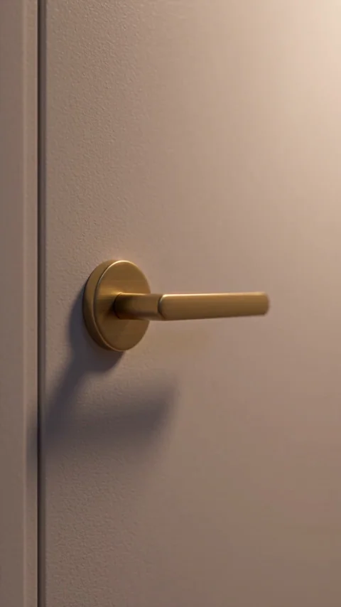
После «Не знаю», перед переходом на площадку.
Референсы по порядку
ACTIVE REFERENCES @image1 — THE FAMILY FRONT DOOR SEEN FROM INSIDE THE APARTMENT: warm light-grey panel, plain rectangular inset border, brass lever on the LEFT side of the door leaf, hinges on the RIGHT. Preserve the existing door, panel profile and matte brass shape. Use the warm interior pendant light; crop tightly rather than reproducing the full hallway. The established SROK visual language is tactile dimensional stylized 3D animation: felt, woven canvas, matte soft plaster and rounded sculpted forms, with coherent contact shadows and fine fiber texture. Keep depth and volume, not a flat painted illustration. Warm directional practical light around 2900–3000K models the material, gentle cooler ambient fill separates the background. Any glitter, sparkle or iridescence in the reference is NOT carried over. No glossy plastic, photoreal pores, paper-painting texture or decorative grain crawl. SCENE CONTEXT SROK episode 4, 'Things', standalone dramatic object insert. Inside, the handle does not move again. Use after the mother's 'Не знаю', before changing to the outside landing; preserve both dialogue lines intact. No new plot event occurs. No visible people, body parts or living animals. One single continuous shot, ZERO cuts. FRAMING AND OPTICS A restrained close-up of the INSIDE brass door lever and round rosette on the closed light-grey door. The lever remains on the LEFT side of this door as seen from inside; its free tip extends toward frame-right, exactly as in the reference. Include only a narrow piece of the inset panel and adjacent jamb to fix orientation. Lever and rosette are near the left third, quiet door surface fills the rest. The door is already fully closed at the FIRST frame. The closure happened in the preceding scene; this insert only holds the silence afterward. No keyhole close-up, lock turn, hand, face, moving shadow or reflection. No full door, floor or new architectural element. Fixed FOV 18 degrees, natural compressed perspective from a respectful working distance, approximately f/4. Macro scale where specified comes from the narrow field and framing, not from a wide lens pushed close. One primary focus plane remains fixed; background softly defocused but the named subject fully readable. Do not widen to show the whole location. Vertical 9:16. CAMERA AND ACTION Exactly 4.0 seconds, real time throughout, no slow motion or speed ramps. 0.0–4.0: a perfectly locked-off camera holds the already-established still life, zero dolly, zoom, pan, tilt, orbit, handheld shake or rack focus. Static held object animation, stable geometry and steady light; quiet observed duration is intentional. No autonomous movement added to make the image busier. The first and last frames share the exact same composition. PHYSICS AND CONTINUITY One rigid handle, one rosette, one closed door. The handle stays horizontal and completely still throughout; the latch is settled, the door does not open, shake or lock itself. LIGHT AND SOUND Preserve the reference's warm practical evening light with a soft cool-neutral fill and natural contact shadows. Exposure and color remain fixed. No pulsing lights, dramatic shafts or lens flare. NO BACKGROUND MUSIC, NO SCORE, NO MUSICAL STING. No voices, dialogue, humming, breathing, narration or singing. Diegetic only: very quiet interior room tone only; no repeat door slam, lock click or footsteps. Sound is quiet, suitable for laying under an existing scene. DELIVERY AND LOCKS Seedance 2.5, direct BytePlus, 480p, vertical 9:16, 24 fps output, exactly 4 seconds, one shot, zero cuts. Stable object identities and material depth throughout. Everything visible is unlettered: no text, letters, numbers, logos, captions or UI. Props remain inert and keep their established state. The subject is large within the specified tight crop; the rest of the location exists outside the frame. One stationary viewpoint and a single consistent focal length. No music of any kind.Скачать .txt ↓
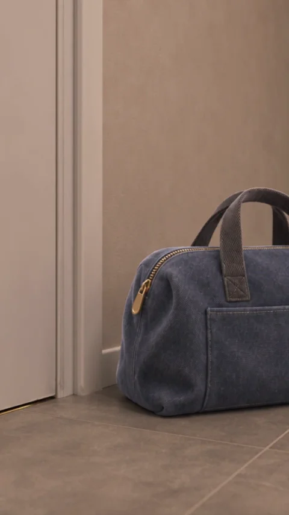
Перед финальным неподвижным планом мужа.
Референсы по порядку
ACTIVE REFERENCES @image1 — THE LANDING OUTSIDE THE FAMILY DOOR: pale grey-beige floor tiles, warm grey baseboard and closed light-grey door; soft 3000K ceiling illumination. The door is seen from OUTSIDE: hinges left, handle right, but both are above this low crop. Use only the floor, lower door panel and light, not its wide view. @image2 — THE SAME SINGLE SLATE-BLUE CANVAS BAG: copy the charcoal woven handles, unbranded front pocket, curved brass zipper and exact proportions. The upper view gives its CLOSED state. The two views are one object's design reference, never two bags. The two shirts and rabbit are completely enclosed within it. The established SROK visual language is tactile dimensional stylized 3D animation: felt, woven canvas, matte soft plaster and rounded sculpted forms, with coherent contact shadows and fine fiber texture. Keep depth and volume, not a flat painted illustration. Warm directional practical light around 2900–3000K models the material, gentle cooler ambient fill separates the background. Any glitter, sparkle or iridescence in the reference is NOT carried over. No glossy plastic, photoreal pores, paper-painting texture or decorative grain crawl. SCENE CONTEXT SROK episode 4, 'Things', standalone dramatic object insert. He has stepped out but has not gone anywhere yet. Use BEFORE the continuous final portrait scene, never after its last undecided hold. No new plot event occurs. No visible people, body parts or living animals. One single continuous shot, ZERO cuts. FRAMING AND OPTICS A low, compressed-perspective close shot of the single CLOSED slate-blue bag planted on the landing's grey-beige tiled floor beside the lower-right area of the closed family door. Bag sits in the lower-right two-thirds, a small section of the door base and one tile seam on the left tell where it is. It feels placed down and not yet carried away. The bag is large in frame, about half the frame height; no long corridor, whole doorway or empty establishing view. Both handles rest naturally against each other, zipper fully closed. The father is still standing immediately beside it, his feet and legs deliberately OUTSIDE the crop at frame-right. He has not left it behind; no footsteps or moving shadow suggest departure. Rabbit remains fully inside, without an ear or paw sticking out. Fixed FOV 29 degrees, natural compressed perspective from a respectful working distance, approximately f/4. Macro scale where specified comes from the narrow field and framing, not from a wide lens pushed close. One primary focus plane remains fixed; background softly defocused but the named subject fully readable. Do not widen to show the whole location. Vertical 9:16. CAMERA AND ACTION Exactly 4.0 seconds, real time throughout, no slow motion or speed ramps. 0.0–4.0: a perfectly locked-off camera holds the already-established still life, zero dolly, zoom, pan, tilt, orbit, handheld shake or rack focus. Static held object animation, stable geometry and steady light; quiet observed duration is intentional. No autonomous movement added to make the image busier. The first and last frames share the exact same composition. PHYSICS AND CONTINUITY One closed bag rests heavily on the floor with a soft contact shadow and slightly compressed base. No floating handles, crawling zipper, lifting, sliding or opening. Cloth and door remain still. LIGHT AND SOUND Preserve the reference's warm practical evening light with a soft cool-neutral fill and natural contact shadows. Exposure and color remain fixed. No pulsing lights, dramatic shafts or lens flare. NO BACKGROUND MUSIC, NO SCORE, NO MUSICAL STING. No voices, dialogue, humming, breathing, narration or singing. Diegetic only: quiet landing room tone only, no footfalls, phone buzz or elevator sound. Sound is quiet, suitable for laying under an existing scene. DELIVERY AND LOCKS Seedance 2.5, direct BytePlus, 480p, vertical 9:16, 24 fps output, exactly 4 seconds, one shot, zero cuts. Stable object identities and material depth throughout. Everything visible is unlettered: no text, letters, numbers, logos, captions or UI. Props remain inert and keep their established state. The subject is large within the specified tight crop; the rest of the location exists outside the frame. One stationary viewpoint and a single consistent focal length. No music of any kind.Скачать .txt ↓
В первой версии исчезала вторая тарелка. Вместо прежней карты комнаты взяли кадр уже готовой сцены, где оба места накрыты. Затем попросили крупно показать только ближнее место. Исправленный промпт и нужный кадр находятся в карточке «Нетронутая тарелка гостя».
ACTIVE REFERENCES @image1 — VIKA'S KITCHEN: preserve the walnut-tone dining table, dusty-pink fabric placemats, matching blush bouclé upholstered chairs, plain ivory ceramic plates and clear straight water glasses. Use its warm pendant and blue evening-window light. Deliberate continuity change: the second ivory plate that is still on the sideboard in the location reference has ALREADY been placed on the near placemat in the finished scene. Both place settings now exist. The sideboard and the far place setting are out of frame. The established SROK visual language is tactile dimensional stylized 3D animation: felt, woven canvas, matte soft plaster and rounded sculpted forms, with coherent contact shadows and fine fiber texture. Keep depth and volume, not a flat painted illustration. Warm directional practical light around 2900–3000K models the material, gentle cooler ambient fill separates the background. Any glitter, sparkle or iridescence in the reference is NOT carried over. No glossy plastic, photoreal pores, paper-painting texture or decorative grain crawl. SCENE CONTEXT SROK episode 4, 'Things', standalone dramatic object insert. Vika has prepared a place for someone who has not arrived; insert during her waiting scene after the second plate has been set. No new plot event occurs. No visible people, body parts or living animals. One single continuous shot, ZERO cuts. FRAMING AND OPTICS A tight oblique reverse view from Vika's SIDE of the table toward the EMPTY guest chair. The prepared guest setting occupies the lower half: exactly one visible plain ivory plate on its pink mat, one fork to its left, one knife to its right, one clear half-full water glass just beyond. The empty guest chair's blush upholstered back rises softly in the upper-right. The plate and vacant chair clearly belong to the same place. Vika remains seated behind and to the side of the camera, entirely outside this crop; her own second plate, glass and phone are also outside the crop, still existing. Do not show the whole table, kitchen, a second empty chair or another person. This is the GUEST'S unused setting, not Vika's occupied chair. Fixed FOV 29 degrees, natural compressed perspective from a respectful working distance, approximately f/4. Macro scale where specified comes from the narrow field and framing, not from a wide lens pushed close. One primary focus plane remains fixed; background softly defocused but the named subject fully readable. Do not widen to show the whole location. Vertical 9:16. CAMERA AND ACTION Exactly 4.0 seconds, real time throughout, no slow motion or speed ramps. 0.0–4.0: a perfectly locked-off camera holds the already-established still life, zero dolly, zoom, pan, tilt, orbit, handheld shake or rack focus. Static held object animation, stable geometry and steady light; quiet observed duration is intentional. No autonomous movement added to make the image busier. The first and last frames share the exact same composition. PHYSICS AND CONTINUITY The plate, fork, knife, glass and empty chair remain absolutely still. Water is calm, the glass stays half full, and all objects keep contact with the table. No food, steam, additional crockery or autonomous phone activity. LIGHT AND SOUND Preserve the reference's warm practical evening light with a soft cool-neutral fill and natural contact shadows. Exposure and color remain fixed. No pulsing lights, dramatic shafts or lens flare. NO BACKGROUND MUSIC, NO SCORE, NO MUSICAL STING. No voices, dialogue, humming, breathing, narration or singing. Diegetic only: quiet kitchen room tone with a faint refrigerator hum only. Sound is quiet, suitable for laying under an existing scene. DELIVERY AND LOCKS Seedance 2.5, direct BytePlus, 480p, vertical 9:16, 24 fps output, exactly 4 seconds, one shot, zero cuts. Stable object identities and material depth throughout. Everything visible is unlettered: no text, letters, numbers, logos, captions or UI. Props remain inert and keep their established state. The subject is large within the specified tight crop; the rest of the location exists outside the frame. One stationary viewpoint and a single consistent focal length. No music of any kind.Скачать .txt ↓
05 / Собираем историю
Последние 10 секунд.
Один кадр. Никаких объяснений.
AI — Новый Уровень
Один разбор даёт материалы для одной серии.
На курсе разбираем весь путь: от своей идеи и персонажа
до готового AI-видео.